Annual Report of the Mysore Archaeological Department for the year 1934
Reading this page
p. 23 is the page number printed in the volume; PDF 391 is that page's place in the scanned PDF, the page to open in the source scan. The badge at the bottom right shows the page you are reading as you scroll: click it to show printed or PDF numbers, or both, and to jump to a page. ↑ Top takes you back to the start.
Footnotes are gathered at the end of the report, each with its printed page and number. Plates stand where the report binds them, at the end of the paragraph they interrupt; All plates, at the foot of the contents, shows them together.
Part I: Administrative
Staff; Tours; Monuments; Epigraphy; Publications; Conservation
The only change in the staff was the retirement of Mr. M. C. Srinivasa Iyengar, Pandit of this Department, in January 1934.
Staff.
The Director toured in all the Districts of the State except Shimoga and Chitaldrug for inspecting ancient monuments and for collecting epigraphical and archaeological data about important artistic and historical structures. The Assistant to the Director made a long tour in the Hassan, Kadur and Shimoga Districts for collecting new inscriptions. The Architectural Assistant who was transferred to Mysore, temporarily, worked mostly at the Head-quarters.
Tours.
Some of the ancient sites explored by the Director were Būdihāl, Nelamangala and Sāvandurga. A detailed study was made of some of the most important hill forts in the Bangalore and Tumkur Districts.
Tours for studying the Chālukyan monuments in the State were concluded and the work of preparing the drawings and photographs required for illustrating the monograph on Chālukyan Architecture in Mysore was continued at Head-quarters.
Monuments.
The number of new inscriptions collected during the year is about 80. They belong mostly to the Vijayanagar period and some of them relate to the Sringeri and the Tirthahalli Matts. An interesting inscription on stone found near Sringeri consists of a grant by Vidyāraṇya Svāmi in 1386 A. D. The copper plates of the Sringeri Matt were re-examined and some of the inscriptions found in the Kañitas and palm-leaf manuscripts were copied. The succession list of the Bhāgavata Sampradāya Matt at Mulbāgal, Tirthahalli Taluk, was secured. Mr. R. Rama Rao, B.A., Assistant to the Director, did the bulk of the Epigraphical work of the year.
1
Several important manuscripts and some coin collections were studied.
Publications. During the year the detailed report of this department for 1930 was printed and that for 1931 was sent to the Press.
The manuscript of the Report for 1932 was completed. The work of printing and binding the Index Volume I of the Epigraphia Carnatica was completed and the copies were received from the Government Press, Bangalore.
Select views of the architectural monuments and certain publications of this department were exhibited at the Karnātaka Sāhitya Parishat in May 1934.
The Director was deputed by the University to the 7th All-India Oriental Conference held at Baroda in December 1933 and as instructed by the Vice-Chancellor invited the Conference to hold its next Session in Mysore.
Excavation work was not resumed for want of funds. Consequently the monograph on the Chandravalli Excavation could not be completed and published.
The notes made by the Director about the repairs and conservation needs of the monuments studied by him are published in the body of
Conservation. this Report. Notes received from the Office of the Government Architect regarding the work done by that office for the conservation of monuments, are embodied in Appendix “A.” The monuments inspected by the Director of Archaeology in Mysore and his assistants are also named under Appendix “A.”
The staff of the Department worked very hard particularly in connection with the survey of monuments and deserve to be thanked for the zealous work they did during the year. Thanks are also due to the Superintendent, Government Printing, Bangalore, and Messrs. The Indian Photo-Engraving Co., Calcutta, for their co-operation in bringing out the publication.
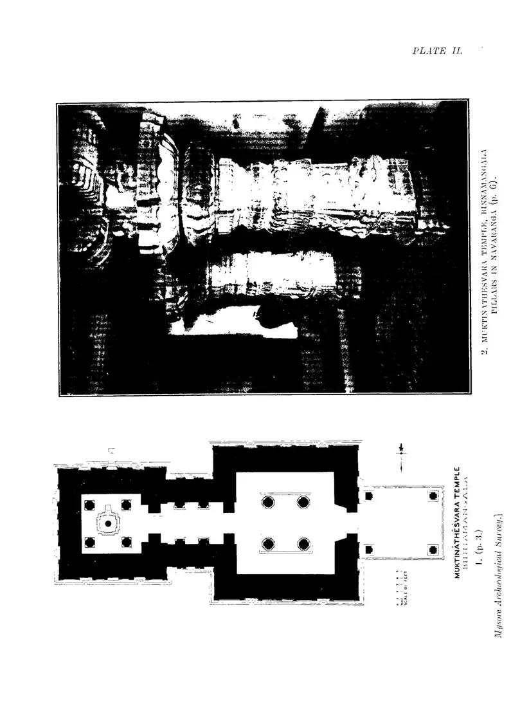
- (p. 3)
- MUKTINĀTHEŠVARA TEMPLE, BENNAMANGALA PIELARS IN NAVARANGA (p. 6)
Part II: Study of Ancient Monuments
Binnamaṅgala
Muktināthēśvara Temple
Situation; History; General-Description; Basement; Outer walls; Eaves; Porch; Navaraṅga Doorway; Navaraṅga; Sukhanāsi and Garbhagriha; Relief sculptures; Conservation
The temple of Muktināthēšvara is situated about two furlongs to the south-east of the roadside village of Binnamangala which is one mile to the south of Nelamangala on the Bangalore road. The temple is a furlong to the east of the road and access to it is rather difficult since channels and rice fields now surround it.
About 8 feet to its north-east, half-buried in the earth, stands a large granite slab of which only 3' \times 4' is visible. It bears a long Tamil Inscription 1 stating that in the Šaka year 1032 corresponding to A. D. 1110 during the reign of Kulōttunga Chōła a grant of lands was made by a Chōła official to the god Muttīšvaran. Though the Vaidyēšvara temple at Talkāđ and this Muttīšvara temple have both some amount of similarity, like the poor standard of sculptures, the use of granite, prominent Dravidian features, etc., yet the differences between them are also many and so definite and sufficient that it is not impossible to ascribe them to different periods. The only addition of later times at Binnamangala appears to be the front porch which perhaps dates from C. 1400 A. D. The rest of the building is homogeneous and consistent with the Chōła school. No other inscription has been found. The friezes of lions and Yakshas and the roundish cornice, the prevalence of rearing tiger brackets and the presence of the inscription lead us to ascribe the temple to the Chōła times.
The whole structure is of granite except the brick roofing and tower. (Plate IV, 1.) The building stands in the open without a'prākāra or other appertinent buildings and has a four-pillared garbhagriha, a narrow sukhanāsi, a four-pillared navaranga and a small porch of one aṅkaṇa. (Plate II, 1.) A stone lamp pillar, about 30 feet high, stands about 20 yards to the east. It is probably a work of about the 17th century. A small stone-built tank lies about 20 feet to the north-east of the building.
The temple does not stand on a platform but the basement has four distinct cornices. The lowest has elephant heads at the corners; the second from the bottom is rounded with a number of narrow shallow horizontal flutings; the third is a row of
1 . Epigraphia Carnatica, Vol. IX, Nelamangala Taluk, No. 3. eaves ornamented with a frieze of leaves interspersed with lion faces, and below the eaves is the fourth row of long-eared short-maned lions (or tigers), prospectant, retrospectant or regardant, with the corners occupied by two-footed tailed makaras. The fourth cornice has also a row of leaves on the lower surface.
The walls are formed of well dressed granite blocks skilfully placed one above the other, the outer faces being smoothly planed except where the pilasters or the sculptured figures intervene.
Outer Walls.
The pilasters like the whole building are right angled and have right angled damaruga-shaped mouldings below the abacus while the capitals are borne on the heads of dwarf Yakshas and supported by brackets of roaring tigers.
The sculptured figures on the walls are not very fine, being sometimes too heavy at the ankles and feet. They are definitely inferior to Bēlūr work or to Nañdi work but better than that met with in the Vaidyēsvara temple at Talkāđ. The figures generally wear highly ornamented kirīṭas of the Chōļa type and not the plain cone-shaped ones of the Vijayanagar type. A few wear kirīṭas having several tiers as in early Hoysaļa images. But though the images lack gracefulness they are generally in attitudes which are familiar in Chōļa sculptures. The chief images are, from the south of the east door :—
East Wall.—
1. Sūrya with lady attendants.
South Wall.—
2. Dakshiņāmūrti, two-handed, wearing long cylindrical jatā on head, yajñōpavīta and holding rosary in the right hand. A lady on each side.
3. Tānđavēsvara as Andhakāsuramardana.
4. Two-handed goddess (Umā ?) standing with lotus in the right hand. The feet are large and ugly and the folds of the sari very conventional. A lady stands on each side.
5. Gaņēsa seated on mouse. Attendants on each side. Lady to the right and male to the left, each holding lotus in the right hand.
6. Three-eyed Sadāšiva standing (abhaya, pāša, deer (?) and dāna) with several ladies on either side and a fine creeper tōraṇa above with Gaņēsa seated. (Plate III, 2). Further up there are soldiers and makaras.
West Wall.—
7. With lady attendants on either side in the centre stands under a canopy Veñkaṭēša (abhaya, chakra, śañkha and kaṭihasta). He wears jatāmakuṭa, makarakunđalas, yajñōpavīta, but no sarpas. His forehead
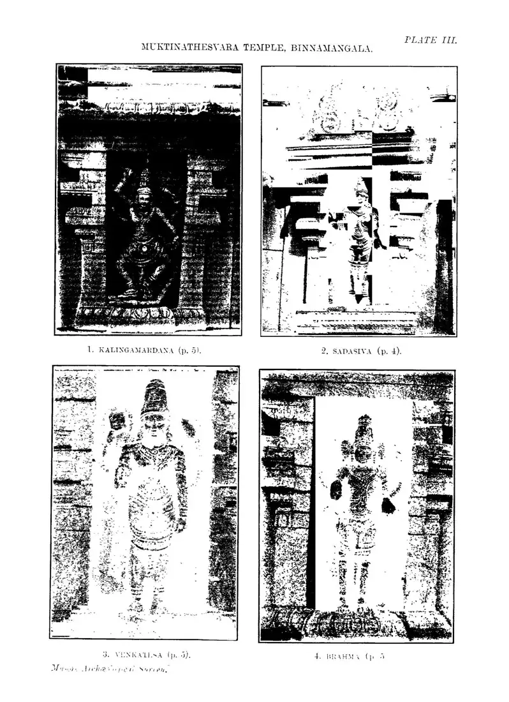
- KALINGAMARDANA (p. 5)
- SADASIVA (p. 4)
- VENKATI-SA (p. 5)
- BRAHMA (p. 5)
has however the third eye which is peculiar. The presence of Veňkaťeša with the third eye in Chōlā sculpture is remarkable. (Plate III, 3). Above, under a kīrtimukha is a linga whose presence is also significant. Veňkaťeša is perhaps a form of Harihara; but the god of Tirupati has dānahasta instead of abhaya.
North Wall.—
8. Three-headed Brahma standing clean-shaven, with jatāmakuṭa and four hands: abhaya, rosary, gadā and dāna. (Pl. III, 4). On the tower is Gajalakshmī.
9. On the wall are a Rishi or Dakshiṇāmūrti to the left, and
10. Śachī on an elephant to the right with male and female attendants.
11. Bhairava with snakes and dog.
12. Chāmuṇdā (Vaishṇavī) standing to front on buffalo's head as in the Bhōganaṇdi temple window at Nandi but ruder. Her four hands have (abhaya, chakra, śankha, kaṭihasta). Lady attendants. She wears breast band and the drapery folding is conventional.
13 and 14. Kālīngamardana, four-handed and dancing (chakra, tail of snake, śankha, lamba-hasta). The snake's head is flat and is trodden under Kṛishṇa's feet. (Plate III, 1.) He wears a smile. A devotee with folded hands to the left.
15. Vēṇugōpāla—rude.
East Wall.—
16. Chandra with attendants.
Though the larger wall images have a definitely Chōlā look, it must be confessed that the smaller attendant figures resemble those in the Vaidyēśvara temple.
Below the eaves is a row of Yakshas dancing or otherwise enjoying life, interspersed with monkeys, Kinnaras, etc. The eaves shaped like a sharp 'S,' (as in the Chāvuṇda-Rāya-Basadi at Śravaṇabelgolā), are ornamented with kīrtinukhas. The brick roof is a restoration work carried out in the 17th century. But the brick tower, about three feet high, is plain and resembles that of the Gandhavāraṇa Basadi of Śravaṇabelagolā and may be of about the same age. The bulls and arches above are of the 17th century.
The porch is a four-pillared structure, perhaps of Vijayanagar times, with the two front pillars bearing effigies of the builder and his wife. The male figure has long hair and a long beard.
Porch.
The jambs of the navaranga doorway have ornamented floral bands supported by vertical bands of kubjas and musicians with a large sañkha or conch hanging on each outlying pilaster. The lintel has Gajalakshmī between two two-footed makaras which are swallowing maneless lions.
The navaranga (14' × 14') has four fine square pillars each of which is well ornamented. (Plate II, 2.) On a square-shaped base with indented angles rises a square shaft on each face of which above a row of lions and śarabhas are small sculptured figures among which are Kālīngamardana, standing Śiva and Vishṇu, Brahma and Gaṇēśa, Tāṇḍavēśvara and the consorts of the first three. Above is a row of lion heads and the abacus has Yaksha musicians and dancers above it.
Eight of the nine ceiling squares are plain but the central one which is flat and similar to the ceiling in the Yōganañdīśvara temple on the Nandi hill has nine panels with Umāmahēśvara in the centre and the Dikpālas around.
The images kept in the navaranga are: Dakshiṇāmūrti, Gaṇēśa, a seated devotee and Mahishāsuramardinī of the standing Marase type being exaggeratedly slim and tall. The last image has a breast band.
The doorways of the sukhanāsi and garbhagrīha are both plain and there are no dvārapālas anywhere in the temple. The sukhanāsi has three pilasters and the garbhagrīha four pillars, all of the plain square type, which may have been put in as late as the seventeenth century along with the porch. The Muktināthēśvara linga is an old and worn out specimen, split vertically in twain and fixed into a fine pītha of the indented square shape. There is a small rude Nandi in the sukhanāsi.
Opposite the temple between the porch and the pillar are two sculptured slabs. One has a standing ruler with a large pot-like head-dress holding a rosary in his hand. Perhaps he is the restorer of the temple. The other slab has a king and his two queens with an attendant.Very probably these are all bhakta figures. The king has the archaic smiling lips of the Vijayanagar type. The dating, however, is doubtful.
1. Though the temple is not of first rate importance for art, it is one of the few genuine Chōla monuments in Mysore and should be protected under class II.
Conservation.
2. A pathway should be made to give access to it from the road which is only a furlong away.
3. The temple roof is very much damaged by the growth of a peepul tree
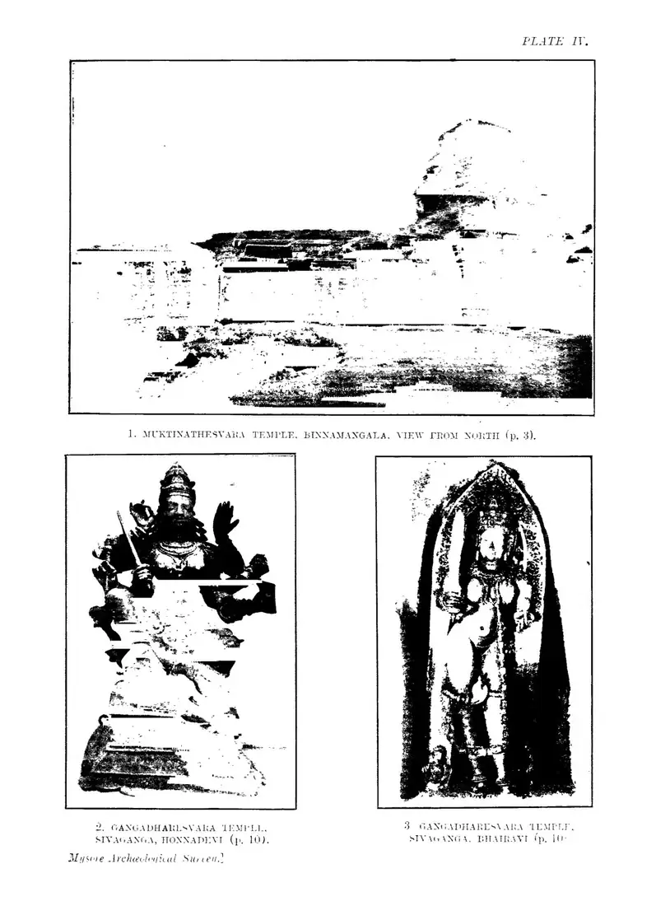
- MUKTINATHESVARA TEMPLE, BINNAMANGALA, VIEW FROM NORTH (p. 3)
- GANGADHARLSVARAA TEMPLE SIVAGANGA, HONNADEVI (p. 10)
and the brick tower is partly destroyed. Its lost portion may be built in again with brick and the whole covered with cement. The roof may be remade with concrete.
4. Owing to the interference of thieves with the central navaranga slab, the navaranga floor has subsided by five inches leaving a horizontal rent in the walls. These should be immediately supported with hard stone slabs and cement and the navaranga floor levelled.
5. Some of the beams have cracked and may be examined.
6. A battened wooden doorway may be provided.
7. The platform around the lamp pillar should be rebuilt lest the pillar should fall.
8. The inscription stone should be dug up and reset as also the stones of the pond.
9. A compound wall enclosing the pond and the lamp pillar may be built with a door to the east.
Part II: Study of Ancient MonumentsSivagaṅga
Brief notices of the several places of interest and of the temples on the hill at Śivaganga have already appeared in the Mysore Archæological Report for 1915. Here the temples are studied with reference to their architectural history and the points of interest are noted either because of their dates or because of their architectural merit. Since the temples are the most important monuments on the hill, they are dealt with first.
Gaṅgādharēśvara Temple
Prākāra and Mahādvāras; Maṅtapas in courtyard; Navaraṅga Hall; Cave Hall
A large prākāra wall encloses the Gangādharēśvara temple area; but its original gateway belonging to about the Hoysala period appears to have been on the east. The latter has cylindrical granite pillars (as in the Pañchalinga temple at Sōma-nāthapur). But to its east and also to the north of the prākāra additional mahādvāras with brick towers have been built probably in the Vijayanagar days.
Just inside the Hoysala or, more probably, the 14th century mahādvāra stand
Mantapas in Courtyard. two small stone shrines belonging to about the Hoysala period. The stone śikhara of one of them dating perhaps from the 14th century is now deposited on the ground.
To the west is a large stone Girijākalyāṇa-mantapa giving admission to the east doorway of the navaranga hall. It has large well carved granite pillars with brackets and some armoured riders as in Kempe Gauđa's pavilion. The cubical mouldings of the pillars and the stone walls are ornamented with varied sculptures of Vishnu, Śiva, Vāmana, etc., and the two inner pillars near the doorway bear in high relief the images of a king and queen, evidently those who built the pavilion. They may be Kempe Gauđa and his queen or Venkaṭapatirāya and his queen. On the walls appear the seven Holy Mothers, Girijākalyāṇa and Umāmahēśvara with the Rīshis and Dikpālas. The structure is strong and enduring.
The present navaraṅga hall is really an old open courtyard covered over and enclosed during Kempe Gauđa's time. It contains several Navaranga Hall. maṇṭapas now connected by a common roof. Three of these are worthy of notice. The old Kalyāṇa maṇṭapa has four beautifully polished black stone pillars whose sixteen-pointed, cubical and wheel-shaped mouldings and chain ornamentation refer them to the Hoysala period.
The Nandi-maṇṭapa is borne on four fine bell-shaped Hoysala pillars, the inscriptions upon whose bases record a grant in 1196 A. D. for the god Śivagaṅganātha.
A little to the west there is a small pavilion supporting a huge bronze bell called Omkāra-ghaṇte an inscription on which records that it was a gift by Kempe Gauđa I.
To the south of this navaranga hall a great rock overhangs a cave, the entrance to which is now provided with a well-worked granite doorway supported by moustached Śaiva dvārapālas of life size. The lintel has Gajalakshmī supported on each side by Vidyādharas while the jambs are formed by three sets of sculptured blocks bearing ornamental rudrāksha , scroll bands, etc. The small dvārapālas are supported by makara-treading damsels and on the outer side on the right stands the votive image of a prince and on the left, stand those of his queen and perhaps her son. Who these personages are it is difficult to state. Possibly they are Kempe Gauđa I and his family.
The doorway leads to a large cave about 40' long and 30' broad which is now converted into a navaraṅga hall and two garbhagrihas. In Cave Hall. the cave hall there are now kept a large number of stone and metal images which may be noticed in order from the door running clockwise :
1. Sūrya—Rude stone image, perhaps of the 17th century.
2. Tāṇdava Gaṇēśa—Stone image of the Vijayanagar period.
3. Durgā —Rude stone image.
4. Lamp bearing metal image of either the father or the brother of Kempe Gauđa.
5. Kempe Gauđa—image with inscription.
6. Image of ūligada Basavayya.
7. Behind No. 6, stone images of a prince and a princess, both devotees; two Nañdi bulls.
8. Tāṇdavēśvara.
9. A cave used as a store house in which are two fine bronze images of goddesses.
10. Tāṇdavēśvara—fine image; perhaps of Andhakāsura as generally called. It has several inset rubies. The ten hands of the image are thus disposed: dagger, abhaya, parašu, triśūla, đamaruga, agni, ghaṇṭā, padma, vīṇā, lamba-hasta. Flames are darting forth from the halo of the god and the image has a graceful pose. It is definitely a Vijayanagar specimen; but shows that the art of metal casting was still in good condition. ✓
11. Four-headed Chaṇđikēśvara.
12. Tāṇdava Gaṇapaṭi—Babyish god in a fine dancing pose.
13. Seated Gaṇēśa.
14. Chaṇdraśēkhara with Gaṇgā and Gaurī. He is the utsavamūrti of the main temple. The loose triśūla in front needs a pīṭha.
15. and 16. Sōmaskandamūrti of Umā and Mahēśa—The central image of Skanda is missing and needs to be replaced.
17. and 18. Kalyāṇa-Sundara with consort. Old and fine—The noses, etc. of 16 and 17 are all rubbed off—The image of the consort has to be soldered on to the pīṭha.
19. Umāmahēśvara.
20. Gaṇēśa—a small Hoysalā image—relic of the older days.
21. Saptamātṛikā panel—rude and worn out.
22. Vīrabhadra—rude.
23. Gaṇēśa on the living rock.
24. Shaṇmukha on the living rock.
25 and 26. Harihara—on the living rock. This is a 17th century work with the metallic image of a Pāllegār (named Eṇṇe-Gaṅgaṇṇa) depicted as lamp bearer.
27. Gaṇēśa on the living rock.
28. Bhairava—perhaps late Hoysalā work.
There are plenty of metal bells in the hall. But just in front of the sukhanāsi doorway is a small pavilion with two cast bronze pillars of fine design. Chain ornamentation and rounded wheel-shaped mouldings are also prominent. They are either 14th century work or their imitation in the time of Kempe Gauđa.
2
Garbhagriha and Deities
No heading in the body: this section starts at its printed page (10).
A small sukhanāsi leads through a comparatively plain doorway to the garbhagrīha in which on a low pītha is a large natural linga rising to about 3' from the ground. It may belong to the Hoysaļa or even to the Pallava days. A chamber in the cave on the east is pointed out as the treasury of Kempe Gauđa when the temple was being built. The bull opposite Gaņgādharēšvara is a well ornamented piece and has the look of Hoysaļa workmanship. The height of the cave hall is about 5' to 8'. To the north-east of the cave hall is a small hole in the wall through which water rushes in during the rains. The hole above must be cement-pointed and the broken images repaired.
To the north of the Gaņgādhara shrine, a small sukhanāsi leads to the shrine of Pārvatī, an insignificant image of perhaps the 17th century. The wooden cot in the bed chamber needs to be repaired.
Part II: Study of Ancient Monuments › SivagaṅgaHonnādēvi Temple
The rock which overhangs the cave shrines is a very large one and in the cave on the east is the Gaņgādharēšvara shrine. There is a smaller cave on the north in which is housed the goddess Honnādēvi. The latter shrine also has a large front hall from which a small doorway leads to the cave hall which is about 40' square and 6' to 10' high. The image of Honnādēvi is a large one, about 5' high, of Durgā with eight hands (sword, short sword, battle-axe, chinmudrā, svarga-hasta, ghanṭā, buckler and kapāla). She is treading upon the Rākshasa Rakta-bījāsura and killing several of the Rākshasas while dogs and goblins dance about.
In a niche on her left is a standing Bhairavī, called Kāmākshī, 5' high, of Hoysaļa workmanship. In the niche on the right are housed the old and new metal images of Honnādēvi. The old one is a particularly fine image. (Plate IV, 2.) In a cave chamber on the east there is another stone image of Bhairavī, a fine piece of Hoysaļa workmanship. (Plate IV, 3.) It is said that 40 years ago these images of Bhairavī flanked Honnādēvi in the garbhagrīha and that one of them was damaged while the temple was being repaired. Neither of them is worshipped now. In the south-west corner of the cave hall rain water rushes in during the rains. The drain in front of Honnādēvi and the wall require repairs.
To the west of the navaraņga of the Honnādēvi temple is the Honnamana-gavi-maṭha with a Vīrabhadra shrine in it.
Other Points of Interest on the Hill
About 50 yards to the west of the Honnādēvi temple is a flight of steps leading to a large pool of cool sweet water in a cave.
Pātāḥa Gaṅgā
Tower; Subrahmaṅya; Emme-Basava; Gaṅji Virabhadra; Lamp Pillar; Inscriptions; Chigaṭana-gavi; Colossal Bull; Onake-kiṅdi; Kōḍugallu Basava; View from Top; Tirthadakamba; Votive Bell; Kalyāṇi or Kamala Tirtha
The pillars of the fine tower met with near a huge Gaṇapati as we ascend the flight of steps leading up the hill, have round shafts and the pot and wheel-shaped mouldings. Though they are of granite, it is not impossible that they may hail from Hoysala or even Chōla times. But the brick tower above is of about the 17th century.
Tower. The Subrahmanya figure is a well-worked and impressive one, though its face is not handsome. In its 12 hands it holds abhaya, triśūla, arrow, sword, goad, mace; triśūla, lotus, pāśa, bow, sword (short), dāna. It may be attributed to the middle Vijayanagar period, i.e. , to about 1500 A.D.
Subrahmanya. Emme-Basava is about 15' long and 8' high. It is much broader and has a larger face than the proportion would require. It is of granite. It is similar to the Basava image of Arasinakere 1 .
The inscription in the cave is evidently ancient and in the characters of about the 8th century, possibly of the Gaṅga times.
The top panel has a linga under a canopy, an orb combining the Sun and the Moon, and a Svastika in between.
Gañji Vīrabhadra is a bas-relief figure about 5' high on a living rock, with sword, arrow, bow and shield. Two of the steps in front of the Vīrabhadra temple are the two halves of a large vīragal showing a spirited battle between cavalry men with swords and spears and a hero with a curved sword on foot. The slab bears no inscription. From its size and the curved two-fronged sword held in the right hand of the hero, it may even be attributed to the Gaṅga times.
Ganji Virabhadra. Near Kempe Gauḍa's Hajāra, facing east, is the east mahādvāra of the Gaṅgādharēśvara temple whose brick tower has now partly disappeared. Just in front of it is a Kannaḍa inscription of seven lines stating that in S' 1288 (1366 A.D.) Māradāsa, son of Balaradāsa of Hōgunda got a lamp pillar put up in the pit by its side. The pillar has now disappeared.
The man riding the lion bracket of the west end pillar in Kempe Gauḍa's Hajāra wears a peculiar dress which probably represents a coat of mail.
About 20 rock-cut steps above Kempe Gauḍa's Hajāra, there are several votive inscriptions among which is one in Nāgari characters.
Inscriptions. Near the steps closeby the Linga shrine, there is a large number of Kannaḍa and Nāgari votive inscriptions which deserve examination.
Further up, the Chigaṭana-gavi contains five portriat statues : two are of bearded chiefs and two of their consorts and the fifth is of a standing prince. Very probably Kempe Gauḍa, his brother, and the rest of his family are represented. An inscription of five lines to the right of Chigaṭana-gavi on a rock mentions a certain Chikka Kāma Nāyaka, son of Bairappa Nāyaka, as being the person who got the steps on the rock cut, evidently for the convenience of devotees climbing up the hill. Another similar inscription of one line mentions the name of Japa Guru Gauḍa.
Another huge roughly carved bull, of workmanship similar to that of Emme-Basava, but slightly larger, is found a little further up.
Colossal Bull. Probably it is also of the same period.
Onake-kiṇđi is about 200 steps above Dođđa Basava but lower than Kallu-bāgilu and near the inscription of Krishnarāja Wodeyar IV.
Onake-kindi. A modern Telugu inscription was copied on the rock below it. Another inscription of two lines on the rock surface about 20' inside of Onake-kiṇđi (close to Nelamangala 129) mentions a certain Kencha Sōma Nañjiah.
Above the well with Shāji's inscription of 1652 A.D. (Ś 1574) is a small pavilion with a small shrine in front. These belong to the Pāllegār days.
Kōđugallu-Basava was carved in 1388 A.D. according to the inscription below it. To this date must now be ascribed the other megalithic bulls of the hill, which are all of practically the same workmanship. A small pavilion of four pillars originally stood over this bull as over the others. Perhaps this explains the roundness of the pillars of the fourteenth century since there is imitation of Hoysalā work yet lingering.
On the south we overlook a hilly country between which and the Šivaganga hill is Virāji Kanive and its Kapila tīrtha. Here Kempe Gauḍa is said to have found a treasure trove and Sarajappa Nāyaka is stated to have passed through the place to Sāvandurga. In the valley is said to be found a large amount of old pottery and the place has to be surveyed for cromlechs and other antiquities. To the south-south-east appears Māgađi with Sāvandurga beyond ; to the south-south-west is Bhairavanadurga. On the east Bangalore is said to be visible on a clear day or night, while on the west is Mikkarājana are containing buried antiquities. Beyond it there is plain country. To the north-north-west is Tumkur, while to direct north appear Siddhaganga and Dēvarāyanadurga, with Kengalguđđa in the foreground and Šivaganga town at the foot of the hill. On the top of the hill there are a small Virbhadra temple and a Linga shrine. Both of them are insignificant. By their
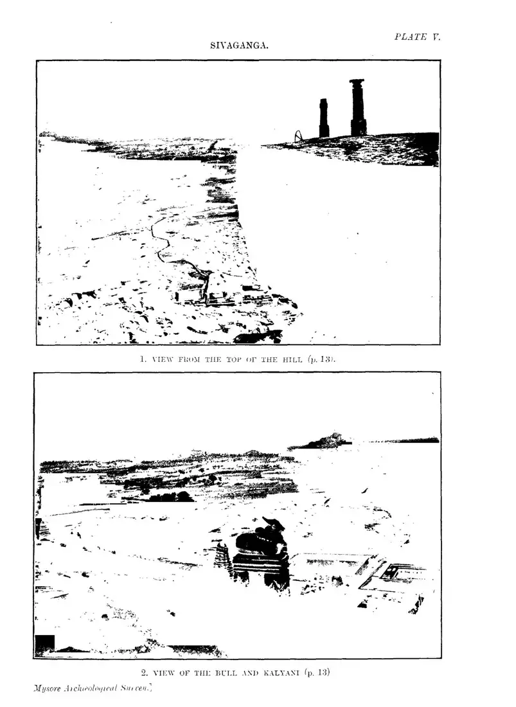
- VIEW FROM THE TOP OF THE HILL (p. 13)
- VIEW OF THE BULL AND KALYANI (p. 13)
side on the south-west is a rockly pool wherein water collects during the rainy season.
The Tirthadakamba is a heavy granite pillar, 2\frac{1}{2} ' square at the bottom and about 15' high. It rises with an octagonal shaft on a square base and has a round moulding just below the square capital. (Plate V, 1). The inscription repeated on the four sides of its base, belongs to the days of Narasimha Hoysala. There is a small chiselcut hollow 15" × 12" and 4" deep to the north of the pillar in which it is said that a cupful of water collects during the makarasankrānti day at the time of Uttarāyana punyakāla. This is called the Gangōtpatti place. A number of votive inscriptions are found near it.
Tirthadakamba. An iron rod bent over the edge of the cliff overlooking the precipice with a bell dangling from its free end was put up by Gurumūrti-Āchāri of Kyātasandra in 1933 as a son was bern to him.
The Kalyāni, (Plate V, 2) also called Kamala Tirtha, is a large stone built pond of about 200' to 200' with well built stone steps from Kalyani or Kamala Tirtha . bottom to top. Around its top runs a high jagati platform with parapet and on the face of the platform between the cornices, hundreds of sculptured panels appear. Commencing from the east and running clockwise may be noticed some interesting groups :—
South-east corner.—
Dharmāngada fetching water for his parents whom he has seated in two cradles hung on a pole.
A man (perhaps Dašaratha) hiding behind a tree slays a person fetching water from a crescent-shaped pond.
Kṛishṇa loots butter and is tied to the Yamala trees. He plunders butter when it is being churned. He hides on a tree top with the clothes of the bathing girls.
South side.—
He plays on flute, wrestles, and kills Kālīnga. Two ladies, one of whom is mounted on a parrot, shoot at a man seated on a tree.
South-west corner.—
The Dikpālas led by Shaṇmukha and the ṛishis wait upon Śiva. Naṇdikēśvara (or is it stag-headed ṛishyaśṛinga ?) plays with girls. In this corner is now kept a fine but damaged Hoysala image of Gaṇēśa which was originally in the Śāntiśvara temple. It should be returned to the temple and preserved.
West face.—
Birth of Rāma and his brothers. The princes follow Viśvānitra, slay Tāṭakā, and defeat her sons. Sitā marries Rāma; the marriage of Rāma's brothers is also celebrated and the bridal parties go in procession.
Part II: Study of Ancient Monuments › SivagaṅgaImportant structures in the Śivagaṅga village
108 Liṅgada Tirtha; Śāntiśvara Temple
Just opposite the gateway leading up to the hill, there is a fine stone built pond with a cloistered verandah running around it. The 108 Lingada Tirtha. latter has its inner aṅkaṇa walled off and converted into several large chambers possessing 108 lingas. Of these the middle one on the east which faces west is called Agastyēśvara linga and is considered to have been installed by Agastya. The building is, for the most part, of about the Māgadī!Pāllegār's time but repairs have also been made recently as is seen from two small modern Kannaṇa inscriptions in the north-west corner.
The steps of the ponds are finely adorned with the figures of lions, elephants, swans, snakes, etc. To the south-west of the pond is a large storehouse of the old type known as Haĵematha, evidently the old building of the Sivagaṅga matt. Among the images in it, one of (Viṭḥhala) Pāṇduraṅga with two hands akimbo holding snake and chakra may be noted.
On a pillar stored in the compound there is an inscription of ten lines in Kannaṇa characters, which is dated 1528 A.D. (Ś 1450) Sarvadhāri.
North-side.—
Rāma defeats Khara, and his brother Lakshmaṇa disfigures Śūrpanakhi. The golden deer appears; Mārīcha is slain. Fight between Hanumān and Garuṇa. Monkeys approach Rāma. Rāma slays Vāli, Sugrīva and Tārā.
North-east side.—
A snake charmer. Monkeys go forth with Rāma and Lakshmaṇa to battle. They bridge the ocean. Fight with the Rākshasas. Lakshmaṇa slays Indrajit. Rāma slays Rāvaṇa. Coronation of Rāma in full state.
The Śāntiśvara temple is, as stated by R. Narasimhachar, an old structure, perhaps the oldest in Śivagaṅga. Its outer walls are Santisvara Temple. ornamented with pilasters bearing beaded hangings as in the Arupāchalēśvara shrine at Naṇdi. The granite pillars of the open mukhamaṇṭapa are plain but cylindrical and have wheel-shaped round mouldings on the top. The navaraṅga has four pillars of granite with sixteen-sided fluted shafts, bell and wheel-shaped mouldings and cannot be assigned to a date later than the fourteenth century. The beautiful pot-stone Gaṇēśa of the navaraṅga now lies mutilated at the tank and the Bhairava image of the temple has
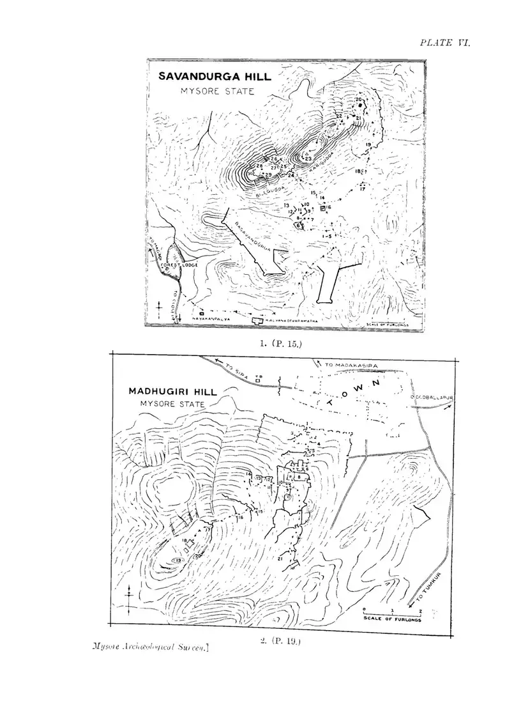
- (p. 15)
- (p. 19)
disappeared. In their places are now a small Gaṇēśa and a goddess of recent make. The Linga is a round topped, fine black thing about three feet high and is certainly older than the fourteenth century. It is not impossible that the temple was constructed for the merit of Śāntaladēvi, queen of Vishṇuvardhana, who is said to have died here; but one wonders whether such inartistic structure of granite of this kind would ever be put up in the name of the great queen of Vishṇuvardhana. It is more probable that the structure may belong to the 14th century. The question however has to be left open at this stage.
In front of the temple there is a fine large dīpastambha, nearly 40 feet high, which is probably a work of the seventeenth century. An inscription on a rock near it reads: Rangarājana sēve .
Part II: Study of Ancient MonumentsŚāvandurga
About seven miles south-east of Māgađi is the hill fortress of Sāvandurga, a third class Protected Monument, rising to a height of about 4,024 feet from the level of the sea. Mr. R. Narasimhachar visited the place in 1915; but he did not climb up the Kari-guđđa or Black Hill. Hence the description in the Mysore Archæological Report for 1915 is mainly confined to the Biļi-guđđa or White Hill. The place was visited again in 1925 and brief notices are published in the annual report of the department for that year. The ascent to the Black guđđa is dangerous inasmuch as we have to crawl on fours on the face of the steep rock many a time. There are no steps whatsoever leading up. The stronghold must have been very formidable formerly. What strikes us at the outset is the continuous chain of the fortifications running all round the hills including the Black hill, the White hill, the valley connecting the two, Basavandurga and the extensive area in between.
The numbers below refer to those given in the accompanying map and pertain mostly to the places of interest on the Black Hill. (Plate VI, 1.)
1. South fort gate—Entrance.
2. Inside the south fort gate which is the first we come across on our way to Nelapaṭaṇa from the forest lodge, is a pair of artificial
South Fort-gate and Monuments inside it
Ojēśvara Temple; Viśvēśvara Temple
3. At a distance of about 30' from the above there are a small rude stone Basava and a head less Gaṇapati in front of it.
4. Three vīragals and possibly another a few feet above the Nelamāļige a little to the south of the above. Perhaps there was a Bhairava shrine nearby.
5. Nelamāļige of possibly the Nāyak period as is evident from the thin bricks. Probably it was used as a guard room or magazine. It has got an outer chamber and a small inner niche. The roof is formed of one slab, about 15' in diameter.
6. Bidirakattē a few yards above, to the left of the pathway leading up to the temple of Ojēśvara.
7. The temple of Ojēśvara is just on the right side of the roadway. It has a ruined brick tower of the Nāyak period, a garbhagrīha, a hall in front of it and a mukhamaṭṭapa, all built in the Dravidhian style. There is no linga in the adytum. The material used is granite and the workmanship plain but for some creeper scroll and floral ornamentations on the jambs. There is a kīrtimukha on the lintel. The creeper scroll issues out of the mouths of yālis on either side of the jamb. The garbhagrīha ceiling is formed of two squares, one placed on another cornerwise with padma medallions here and there. The building is unimportant.
8. A few yards west of the Ojēśvara temple on a granite stone slab, 6' × 4', there is a three-panelled vīragal without inscription, on the lower part of which a royal personage rides forth to battle on a horse. Above him is held an umbrella.
9. The road leads along the side of the second fort wall of simple construction (of mud and rubbles) through the Palace gate.
10. Fort gate immediately to the west of Nelapatṭana. On the granite pillars of this fort gate there are several devices of birds carved with bull heads, human heads and ram heads. Figures of tigers, lions, rishis, elephants, etc., are also carved.
11. A few yards south-west of the above fort gate is the Viśvēśvara temple. It is a ruined granite temple with masons' marks 1, 2, 3 etc., on the stones. It consists of a garbhagrīha without linga, a sukhanāsi with a flat padma ceiling and a collapsed navaraṅga having square pillars with single figures carved on the sides. The jambs of the garbhagrīha doorway have creeper scroll ornamentation issuing out of kalaśas, besides other floral designs. On the lintel there is a linga flanked by elephants on either side. The tower is of brick belonging to the Nāyak period.
12. Second gate of the Palace. A flight of steps leads up to it. Musket holes can be seen in the parapet of brick construction.
13. The Palace site with stone basement and stone walls on which appear two or three ornamental niches.
14. Kalyāṇi-pond immediately to the north of Nelapatṭana. Area of top is about 50' square. There are sculptures all round the railing on the inside. There are a small rudely carved Basava and a Basava temple on the south.
15. A few feet north-west of the pond on a boulder is a bas-relief figure of Hanumān with a dhvaja on each side surmounted by chakra on the right and śankha on the left. The god has a dagger in his girdle. A pentafoil arch is rudely carved above. The left hand is in the striking attitude.
16. The Vīrabhadra temple has a manṭapa on the left. At the north-west corner of the temple is a pair of stone feet.
17. Narasimha and Kālamma temples. These are situated about two furlongs east-north-east of Nelapatṭana.
18. Cave prison.
19. The fort wall of the east hill on the way up the Black Hill is a Hindu construction built, without mortar, of undressed blocks of stone in the cyclopean way and provided with projecting bastions. The pathway leads up through a breach in the fortwall by the side of one of the eastern bastions.
20. Fort-line with a guard room. This appears to have been built by Tippu, because the well-dressed stones are jointed by mortar.
21. Further up, there is the defence tower of rubble masonry overlooking the pathway on the ridge and commanding the eastern approach.
22. Magazine--40' × 20'—with a dome immediately to its south-east.
23. Top-most peak of the Black Hill with a tower manṭapa of stone enshrining a rudely carved bull with a slightly exaggerated neck. Trigonometrical survey bench mark.
24. Fort line in the valley connecting the two hills. The abyss is now impassable.
25. There is a pathway leading up from the Vīrabhadra temple. The branch leading up from Kempe Gauda's Palace is now overgrown with jungle.
26. A flight of stone steps leading up to a gateway in the fortwall.
Biligudda. { 27. Second fort wall of Bilī-gudda.
28. Guard room.
29. Court hall.
30. Line of fortifications—Mud and rubble on the White Hill.
31. Basavanadurga is a connected strong hold with a small fortress having bastions at the four corners. To the south of the durga on the inside there is a depression which is perhaps the foundation for a guard room.
View of the surrounding country from the Blackgudda :—
East —Bangalore and Nandi.
North-east —Tippagondanahalli.
North —Śivaganga.
West —Māgađi and Huttari Durga.
South-west —Broken hilly country with the road leading to Closepet.
South —Road to Closepet and range of large and small hills. The country is very hilly on this side.
3
Part II: Study of Ancient MonumentsDēvarāyandurga
(Pl. VII, 1.)
The temple of Ēśvara called also Vaidyēśvara is of granite with a stepped pyramid, a garbhagriha, a sukhanāsi, a porch, a navaranga of nine aṅkaṇas and another porch in front with stone benches on either side and no railing. There is a plain square padma ceiling in the porch in front. The navaranga ceiling is formed of two squares placed crosswise and has simple padma ornamentation in the centre. The pilasters on the outer walls are simple and square as in the case of the Bhōga-Naṇdiśvara temple at Nandi. The śikhara is also like the one in that temple. But the pillars in the navaranga are square and have octagonal cutting on the shaft and round mouldings at the abacus. The structure may belong either to the 14th or the 11th century. There is a plain Basti behind it.
The first fortwall is formed of undressed stones mostly. To the right of the Penugoṇḍa gate in the second fort wall there is the figure of the musician Virūpaṇṇa with a published inscription.
Near Āne-done there is an inscription of the time of Harihara on a boulder. A stone gateway and the Palace site are nearby. A few yards further up to the east is the Kaṇṇappana-done.
In the third fort wall the gateway has recently been reduced in size.
The parapet above the fourth fort wall and gateway is of mud and has musket holes. In acave is enshrined a small Āṇjanēya called Nīlāṇjanēya. At the doorway are the bricks of the Pāllegār period. The parapet too is of this time. On the inner side of the fifth gateway is a shrine containing two figures—one of Garuḍa and another of Āṇjanēya, both fighting carved in relief on a big boulder. There is the figure of Kōdaṇḍa Rāma between them, perhaps to bring about reconciliation. The gateway of the sixth fort wall has granite pillars with square pot-shaped mouldings above. Near the seventh gateway with Vāyutīrtha, now dried up, is the figure of Hanumān on a boulder.
The Pāda Tīrtha in a cave is reached past the eighth gateway and fort wall. There is a manṭapa in front. Figures of Garuda and Hanumān with folded hands are on either side of the cave. The temple adjoining is that of Saṇjivarāya, while that situated behind is of Laksmī-Narasimha. Going further up we come across a pond and a Pirangibateri. The gateway of the ninth fort wall (Pl. VII, 2) has a figure of Hanumān on the left side. The magazine with two chambers and brick terrace is of the 17th century. The Garuḍa shrine with no Garuḍa is on the summit to the east of the Lakshmīnarasimha temple. Here may be seen the fort line with gate (continuation of No. 2) on the east. The Danus-Tīrtha measures 100' \times 10'-12'' and is a little to the west of the above, while the Rāma Tīrtha is slightly west of the above.
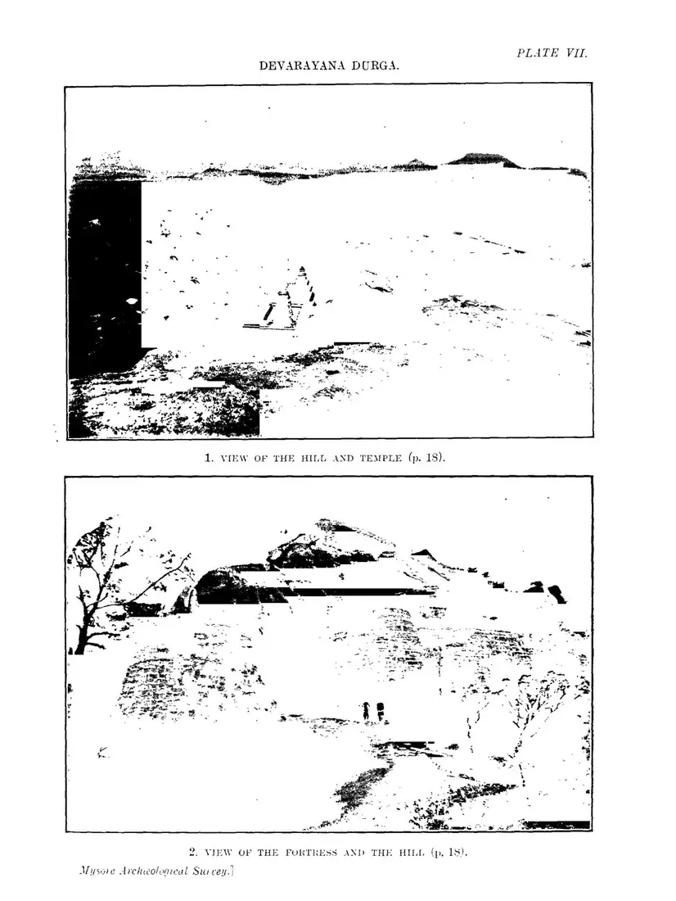
- VIEW OF THE HILL AND TEMPLE (p. 18)
- VIEW OF THE FORTRESS AND THE HILL (p. 18)
Further up is the cave temple of Kōdaṇḍa-Rāma with Lakshmaṇa and Sitā, perhaps of late Vijayanagar days.
The small figure in the Rāmānuja shrine is about 9" high, and called Kaṇṇappa dēvaru locally.
The Lakshmī-Narasimha and Hanumān temples are on the lowest elevation. The pond known as Jayamaṅgali has its source near a rock on the north side.
The Nāmada chilume is near the Forest Lodge.
Madhugiri
Madhugiri is a high and precipitous hill with a strong fort famous in the History of Mysore ( frontispiece ). A detailed description is given below and the numbers refer to those in the sketch map (Pl. VI 2).
1. First fort wall and gateway—Behind it there is another doorway of Hindu workmanship having cyclopean masonry. The parapet, however, is of Hyder's time. The bastions are provided with doorways, musketh oles and, here and there, cannon openings.
2. Rama's temple.
3. Second gateway—independent.
4. Guards' station (?) A Moslem structure of brick and mortar, provided with cannon openings, musket holes and a platform in the middle.
5. Third gateway in the second fort wall belonging to the Pāllegārs' time and renovated by Hyder. The battlements are provided with musket holes and cannon platforms.
6. Third fort wall having two gateways—The front one is Moslem with a parapet wall by the side of a brick flooring. A new inscription of Chikkadēvarāja was found on the boulder to the left.
7. Fourth fort wall with gateway. This is definitely a Hindu structure, perhaps of Chikkadēvarāja's time, having Hanumān on one of the pillars. The parapet is provided with musket holes and cannon openings. There is a batēri to the right.
8. Iṭtige-done—Brick structure of Pāllegārs' times. Below there are flat bricks. Another building to its right is pointed out as the granary. A cistern-like structure is attached to it. An ornamental brick structure which is perhaps a fountain exists in front of it.
It is probable that in this area were situated the habitations of the chief personages since there was plentiful water supply. The cistern-like structure suggests that there was a syphon adjoining the Iṭtige-done.
9. Fifth fort wall with gateway—Hanumān temple and 'Dabbigadiges' are to the right. The latter are granaries.
10. Sixth fort wall—A small one with passage.
11. Seventh fort wall with gateway—Evidently a Hindu structure perhaps of Chikkadēvarāja's time. The parapet above is provided with musket holes. Round bastions also exist. There is a cross wall running from this fort wall to the guard house higher up.
12. Chandra-doñe—A crescent-shaped well.
13. Guard House—Stone and rock structures adjoining the done.
14. Eighth fort wall and passage—The brick parapet above is provided with musket holes.
15. Ninth fort wall with a small doorway. The similar parapet is provided with musket holes and cannon platforms.
16. Low stone wall about 6' high, with entrance-passage leading up the hill. A few yards above is a small done (with no water now).
17. Tenth fort wall with a small doorway of the Moslem period. There is a guard house nearby with its roof fallen; the holes for the beam can be seen.
18. Vishṇu temple on the peak with a small fort wall serving as prākāra and having musket holes. The temple is a simple granite structure with a small square garbhagriha having no image and a mukhamaṇtapa with Dravidian octagonal pillars. The Garuḍa pillar in front is of granite.
There are several granaries and living rooms on the south-west and north of the temple building. The prākāra has a western entrance leading to terraced rooms and granaries built of stone, brick and mortar. Flat bricks of the Pāllegār period are used. On the lintel of the granary room in the south-east corner of the prākāra there is a Kannaḍa inscription of two lines mentioning Chikkadēvarāja Vođeyar.
19. A few yards to the south-west of the temple there is the Navil-doñe with brick work below. There is no water here now.
20. Bhīmana-doñe. This is said to have water always. By the side of the Hanumān figure nearby there is an inscription which mentions the name of Chikka-Gauḍa III.
On the south-east side of the hill a pathway leads down from the Mysore gate through the valley between the tank Chitrakaṭte and the Āñjanēya temple (facing west) south-westwards towards Mysore. A full view is obtained from Bhīmana-doñe.
21. Mysore gate. This was constructed by Hyder as stated in the inscriptions (Persian and Kannaḍa) on the lintel.
Sira
To the south-west of the Travellers' Bungalow there are two caves in which a Mohamedan saint is said to have lived.
Nearby is the Idga which is a large structure, about 70' long, with seven large pointed niches and a parapet wall of the typical Bijāpur style. The two large minārets at the terminations have octagonal tapering shafts and are about 40' high. They have a typical Bijāpur look.
The graveyard some distance from the above contains several tombs and masjids of which the important one is the tomb of Sayid Abdul Khader. The graveyard is surrounded by a compound wall and there are two tombs which have Persian inscriptions on the head stones.
On a stone Brindavana in front of the Middle school there is an inscription of seven lines which is comparatively modern, though the grave itself is perhaps older.
The pillars in the navaranga of the Durgamma temple are imitations of Hoysala pillars. A modern stone screen is used at the threshold of the mahādvāra.
The Malik Rihan Darga has a verandah running all round with pointed arches. The eaves are supported by Hindu brackets with drops. The parapets have the trefoil ( fleur-de-lis ) design. The small supporting minarets have octagonal shafts ornamented with two storeys of pointed arches. The main dome has a broad base and rises on a padma. The building, though small being only 40' high, is elegantly designed and combines dignity with grace. For what reason Malik Rihan of all the Governors of the place deserved this memorial, is not clear. However, the building is definitely of the Bijāpur style. The whole building except the main dome is of stone.
The compound wall should be repaired. All living quarters should be removed from the area. The joints of the stones have to be cement pointed. The yard should be cleared of all vegetation. The darga, though endowed with Inam lands, is not well looked after. The steps leading up to the darga must properly be rebuilt. The votaries are Hindus and the tradation is that these Hindus are better privileged than the Mohammadans in respect of this building.
On the tomb of Aurangazib's daughter nearby there is an inscription which gives the date 1104 besides mentioning Allah and Muhammad.
The Begumbi Masjid is dilapidated.
Nearby stand the Chōti Masjid and Shāh Sherif Darga.
The Mihrab Jumma in the Masjid is of black stone ( Turuvekere Kallu ) and has the following motifs very familiar in Hindu sculpture: the mango drop, creeper scroll, pendant drop ornamentation, brackets, etc. The revolving pillars have 16 fluted sides. There is a black stone chain of eleven links with a large jingle pendant. The doorway of the Masjid is also of black stone and has the kalaśa and floral ornamentations met with in Hindu temples.
The fort is surrounded by a moat on the outside. The first gateway of the Pāllegār period has fallen on the north side. The second gateway called the Diđđi bāgilu was also without doubt Hindu originally as can be observed from the octagonal and sixteen-fluted shafts of the black-stone pillars and the wheel moulding at the top. On the inside of the doorway the jamb on the left side has the creeper scroll ornamentation issuing out of the mouth of the yāli. Some of the pillars create a suspicion that they might be imitations of Hosyala work. The brick and masonry battlements with musket holes and cannon openings appear to have been added in the days of Hyder and Tipu. The third gateway is also Hindu in construction with Dravidian pillars and scroll ornamentation on the jambs. The figures on the pillars are : Gaṇēśa, Bull, Āṇjanēya, Garuḍa, etc. The pillars have heavy bottoms and are of the early eighteenth century workmanship and of the Pāllegār period mostly. The old building used as the Taluk Kachēri until 40 years ago is of stone and brick with a lily flower parapet in the Bijapur style. Two walls only are standing to a height of about 20'. The neighbouring mounds contained to the north-east the treasury and office rooms, to the south a brick-built pond, to the south-east a Hanumān temple and to the west dwelling houses, all of which are now ruined. To the south-east there is a brick building with a dome and contained originally open entrances, to the south, east and north and appears to have been originally a mosque with the mihrab on the west, but converted later on into a Hanumān temple. The image is now kept in the new town. In the building plenty of black stone has been used for the corner steps on the interior. At the south-east corner there is a well with arrangements for lifting water which is sent through pipes to the various parts of the fortress. It is said that elephants were being used for drawing water. Nearby are a broken image of (?) Lakshmī-Nārāyaṇa in sukhāsana and the capital of a pillar, both of which are of granite and suggest the existence of a temple.
On the south-west are two European tombs one of which has an inscription of four lines in English :—
1. Here lies
2. T. T. Temple
3. Leu Reg No.
4. Died March 1800.
Through a postern gate in the south fort wall we come to the Palace site which originally was protected by a wide and deep moat and had a well in the south-west corner. Outside this moat is the first fort wall with its own outer moat. The Inscription No. 73 on the batēri, dated S' 1463 in Achyutarāya's time has recently been cut into several pieces..
Outside the fort on the north is the site of Chikpet. There were here a. Vyāsarāya Matt of stone and brick construction and a temple of Gōpālakṛishṇa.
The latter is a simple Dravidian structure of stone and brick parapet and śikhiara. The parapet has battlements in the Bijapur style. There are only a garbhagriha and a mukhamaṇtapa having broad-based Dravidian pillars of the Pāllegār period. In the garbhagriha is now kept an Āñjanēya figure, the original image having been removed to the Nārāyaṇa temple inside the town. There is nothing extraordinary either about the temple or the Hanumān image, called Rāchōṭi Āñjanēyasvāmi. A large tank called Doddakere immediately to the south was perhaps the source of water supply even in those days.
Further up on the east is a ruined Nārāyaṇa temple of simple workmanship. An old mutilated Hoysaḥa image of Nārāyaṇa with the ten avatāras on the arch and the two front hands broken stands to the north of the pond and to the north-east of the temple. The image must be removed and kept in the manṭapa of the Āñjanēya temple. There is a broken image of Kāḥi lying in the pathway leading through the old Sira site. Only the pedestal and the two legs of Kāḥi are remaining.
The old town had outer mud fortifications now ruined, and was surrounded by a moat. There is another tank called Chikkere between which and the Doddakere the old town existed.
Further north passing through a Moslem grave yard with enclosures, we come to the Chinnada-gōri of Farid Ullah Shah, which is in the same style as the Malik Rihan Darga but has no verandah. The minarets, however, are of brick and mortar and the finial is gold plated. There is no further ornamentation in it as in the case of Malik Rihan Darga. Farid Ullah Shah and Masim Shah (father-in-law and son-in-law) are laid in the tomb, and worshipped by the Hindus also. There is a pond to the south-west of the tomb.
The Bhavānī temple is of rude workmanship, probably belonging to the Mahratta times. It consists of a garbhagriha, a sukhanāsi and a mukhamaṇtapa. The pillars are all plain. A cloistered verandah runs all round. The structure is of granite and the parapet of brick and mortar. The prākāra is of stone, brick and mortar.
The Baraki Mosque was originally meant for two tombs. But one has been left vacant. The inscription to the right of the mihrab has been published. The tomb has trefoil arches and Hindu bracket motifs. Above there are two domes of similar design. The domes and the parapet are of brick and mortar.
The building, Ibrahim Rauza, is an interesting example of the employment of Hindu motifs as can be seen in the cornices. (Plate XVII, 4.) If we remove the minarets at the corners, one would take the building for a Hindu one. The doorways, the multiple Dravidian pillars and the disc-like parapet mouldings are all Hindu. Could the building have come from Vijayanagar days? There are a number of tombs inside the yard.
Seṭṭikere
Situation
Setṭikere is a prosperous village about five miles to the south-west of Chikka-nāyakanahalī. Here is a large old tank to the south-west of which stands the village which appears to have been originally an agrahāra of the usual type founded in the Hoysala period with a Vishṇu temple on the west and a Śiva temple on the north-east.
Situation.
of which stands the village which appears to have been originally an agrahāra of the usual type founded in the Hoysala period with a Vishṇu temple on the west and a Śiva temple on the north-east.
The Yōga-Mādhava Temple
General Description; History; Outer view; Outer Navaraṅga; Inner Navaraṅga; Pillars and Ceilings; The South Cell; The North Cell; The West Cell and Sukhanāsi; Conservation; Mahādvāra
The Yōga-Mādhava temple, as it now stands, is evidently the result of two different instalments of construction, the first one being of fine Hoysala workmanship and the second of the Vijayanagar days. (Plate VIII). As it now is, the temple has three cells or garbhagrīhas of which only the one on the west has a stone tower and a sukhanāsi. There is an inner navaraṅga of nine squares and an outer one, while the whole temple is situated on a platform, about 3' high. A plain mahādvāra without a gōpura stands in front of the temple with the ruins of a rude compound wall around the whole courtyard.
An inscription (E. C. Tumkur Cn. 2) now kept in the south-east corner of the inner navaraṅga states that the temple was constructed in the year 1261 A.D. (S' 1194 Durmati) during the reign of Vira Narasinha III Hoysala, by Gōpāla Daṇāyaka who established the agrahāra. From a study of the structure it is clear that the original Hoysala building consisted of the three garbhagrīhas, the western sukhanāsi, the inner navaraṅga and a small porch of one aṅkaṇa on the east with stone benches and possibly also railings. At some subsequent time, when yet soapstone was being used for structural purposes, though often indiscriminately with granite, the front porch was deprived of its benches and was expanded into an outer navaraṅga with a small cell on the south and a doorway each on the east and north. The mahādvāra and, possibly, the tall Garuḍa pillar which stands in front of the temple, belong to this period.
As mentioned above, a plinth or platform, about 3' in height and ornamented with five cornices, runs around the temple following its contour, old as well as new. The general shape of the navaraṅga on its outside is square while the garbhagrīha has a mixed square and star-shaped outline. On the plinth or platform rises the basement which consists of five cornices, as usual, with their faces carved into dentil and other mouldings but left unworked. The walls of the original building are decorated with indented square-shaped bell pilasters and canopies surmounted by
Outer View.
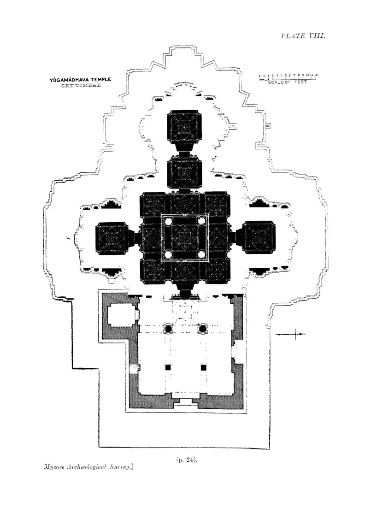
- (p. 24)
Cited in the text: p. 24 ↩
towers of varied shapes like the stepped-pyramid with a tapering vertical band, the multiple-turreted tower, the star-shaped curvilinear tower, etc. The garbhagrīha is star-shaped in outline with square fronts on the south, west and north. The eaves have dentil mouldings and above them the parapet is formed of a series of half-worked turrets. The stone tower or vimāna of the temple is formed of four tiers of turrets with a stone šikhara and a stone kalaša. The detailed carvings are all absent.
The outer navaranga takes the place of the mukhamanṭapa. It is built of soapstone pieces brought from some ruined Hoysaļa temple and mixed with granite blocks. Its northern doorway is now blocked. Its eastern doorway is comparatively plain. In a rough cell in the south-west corner of this outer navaranga is now kept a fine Hoysaļa image of a goddess seated in sukhāsana with four hands (abhaya, padma, padma and dāna). On the tōraṇa is the serpentine design. The pedestal has the image of a lion. Though the image is now worshipped as the consort of Yōga-Mādhava, it seems that the deity is Pārvatī. Very probably she was brought over here from the ruined temple of Šiva which is said to have existed on the north-east of the village. The drapery of the goddess with its foldings shows that it is a late Hoysaļa image. The two inner pillars of this outer navaranga are the usual bell-shaped soapstone ones belonging to the earlier porch. The ceiling of this porch has a small dome with a padma design and the petals on the flower and its large bud are coloured. But no images have been carved on the corner stones.
A well carved doorway of the usual Hoysaļa type with the lintels uncarved leads into the original navaranga of nine squares. Against the western wall are kept the usual images of Gaņēsa and Mahishāsuramardinī, both being Hoysaļa pieces. The second figure is a spirited one showing the goddess standing on one leg and treading on the buffalo with the other.
The four pillars of the navaranga are of the characteristic Hoysaļa bell-shaped type, while the ceilings which are all dome-shaped, though carved out each of a single stone, have varied lotus designs. The corner stones have almost no carvings.
The south cell is supported by two Vaishṇava dvārapālas and has unfinished lintels. In it is enshrined a fine image of Vēņugōpāla, about 5' high, in the usual attitude; but the figure is slim and well worked and has a fine expression. It is not mutilated. But its tōraṇa which has the ten avatāras is covered over with dirt and needs cleaning.
4
The north cell which is similar to the south one houses a Lakshmī-Nārāyaṇa group. The god sits in sukhāsana with the goddess on the left lap. In his four hands he holds śankha, padma, gadā and chakra. As usual, the ten avatāras are carved on the arch. The image needs cleaning.
The North Cell. A well worked doorway with the jambs bearing single rows of cross-shaped perforations and the lintels unworked, leads into the sukhanāsi in which are now kept an image of Rāmānujā-chārya and another of Nammālyār. The garbhagriha doorway which has unworked dvārapālas and lintel panels, has five turrets on the upper lintel above the cornice. In the cell is installed on a Garuḍa pedestal the main image of Yōga-Mādhava. The image is about 9' high above the pedestal and represents Vishṇu seated in yōgāsana, i.e. , in a squatting posture with the feet placed one upon another and the right hand resting on the palm of the left as in the images of Jaina and Buddhist saints. The back hands hold chakra (right) and śankha (left). The serpentine arch which has on its outer edge the ten avatāras and a lion face on top supports the seated figure. The god wears a fine kirīṭa, necklets, necklaces and garlands, armlets, bracelets and anklets and rings upon the fingers and toes. The eyes of the figure however are wide open and looking forward. The lips appear to wear a mild smile. The image on the whole is a finely worked piece. Since the image of Yōga-Mādhava is rare, it is of very great value.
The temple deserves to be preserved at least for the sake of its beautiful images. The main image of Yōga-Mādhava requires thorough petrol cleaning. The brick roofing is greatly damaged so that rain pours in. It needs repairs. The walls which are slightly out of plumb in some places require to be examined. The courtyard should be given a compound wall and kept neat and clean.
The mahādvāra is a plainish structure mostly of soapstone. Since its pillars are rude octagonal ones, its date is the same as that of the outer navaraṅga. Outside the mahādvāra is a large granite Garuḍagamba, about 35' high. It shows nothing remarkable in its workmanship.
Other Buildings
The other temples in the village, viz. , of Ēśvara, Raṅganātha, and Hanumān are all later structures as is evidenced from the characteristic pillars and bricks used in those buildings. The Bhairava and Kēśava images in the navaraṅga of the Ēśvara temple are however of an earlier period. The images in the Raṅganātha temple are of very rude {workmanship and belong possibly to the late Vijayanagar period.
Part II: Study of Ancient MonumentsTuruvekere
Situation and History
No heading in the body: this section starts at its printed page (27).
Turuvekere is a large prosperous village about eight miles south of Bāṇasandra. On its north it has a large tank from which it derives its name. The tank appears to have been in existence in 1z63 A. D. when Sōvaṇṇa or Sōmēśvara, the Hoysalā Governor and builder of the Sōmanāthapur temple made the grant of a vritti to Brahmans, etc. It is highly probable that the temple of Chennigarāya and that of Śankarēśvara were both built a little previously, though the inscription does not mention the construction of the temple.
Chennigarāya Temple
General Description; Basement; Navaranga; Sukhanāsi and Garbhagrīha; Šankarēśvara Temple; Conservation
The Chennigarāya temple is, like the one at Seṭṭikere, a simple but typical Hoysalā structure. It is throughout of soapstone and has the usual garbhagrīha, a closed sukhanāsi, a navaraṅga of nine aṇkaṇas and an entrance porch. The temple stands on a plinth, 3' high, which is ornamented with the usual cornices and follows the contour of the temple.
The basement has also the five cornices whose details are unworked. The walls are decorated, as at Seṭṭikere, with pond-shaped pilasters and turreted canopies. The shape of the navaraṅga is square whereas that of the garbhagrīha is a mixture of the star and square plans.
The temple has the usual eaves, parapet, and a tower of five tiers of turrets with a stone finial at the top. The entrance porch with its stone benches and unworked railings is intact as also its bell-shaped pillars and domed padma ceiling.
The navaraṅga doorway which is supported by two Vaishṇava dvārapālas has on the lintel a Vēṇugōpāla group. The pilasters supporting it on either side show a modification of the sixteen-pointed star shape which is also used for the garbhagrīha.
The navaraṅga has four pillars of the usual bell-shaped kind. Eight of the nine ceilings are similar to that in the porch, having shallow padma domes. The ceiling nearest the sukhanāsi, however, is flat and has nine squares with rosettes.
The sukhanāsi doorway whose lintel and dvārapāla panels are uncarved, has a single row of cross shaped perforations on the jambs. Sukhanasi and Garbhagriha. There is nothing remarkable in the sukhanāsi or garbhagrīha. The image of Channakēśava which is about 5½' high from the floor has the usual attributes and the daśāvatāra arch. But unlike the usual Hoysaļa images, it is shortish and broad in the abdomen. It appears to be a comparatively poor specimen of Hoysaļa sculpture.
Gangādharēśvara Temple
The Šaňkarēšvara (called Mūle-Šaňkarēšvara) temple is similar in most respects to the Chennigarāya temple. (Plate IX). Only the differences are here noted:—
1. No platform is visible around the temple.
2. The tower has a peculiar shape resembling that of the Sōmēšvara temple at Nuggihaļļi. On a star-shaped base it rises with four tiers of stepped pyramid-shaped turrets, even the original parapet being formed of turrets of this shape. These turrets as also the main tower have a tapering vertical band rising up to the śikhara.
3. The pilasters supporting the navaraņga doorway are sixteen-petalled padmas in plan. (Cp. Pillars at Ānekoņda temple).
4. At the eastern end of the navaraņga is placed a small Nañdi. In the navaraņga are now kept a number of images which are in order from the south-west clockwise:— (1) Saptamātrikā panel. The images are well worked as also their vehicles.
(2) Gaņēša kept on a pedestal which belonged originally to Sūrya.
(3) A smaller Gaņēša.
(4) Bhairava.
(5) On a scorpion pedestal a small Vīrabhadra.
(6) Bhairava seated in sukhāsana holding demon's head. All the four hands are broken. The image is a fine one.
(7) Shaņmukha—mutilated.
(8) Nandi-bull facing the Liņga.
5. The dvārapāla and lintel panels of the navaraņga, sukhanāsi and garbha-grīha doorways are all unworked.
6. The liņga is of polished black stone and about 4' high from the ground.
Cement pointing and repairs to the roof are necessary. The navaraņga stones have mostly split and cracked due, of course, to some big fire lit up there. Granite supports have been given on all the four sides so that the building is now intact.
Conservation.
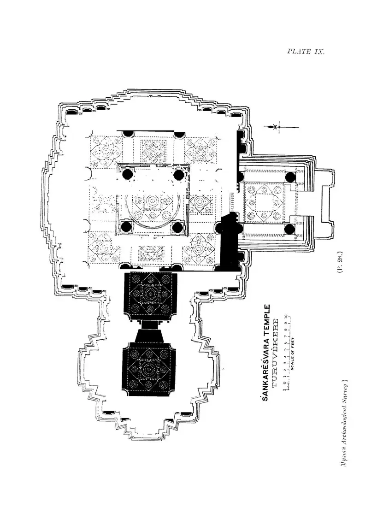
- SÂNKARÉSVARA TEMPLE TURUVÉKERE 1 0 1 2 3 4 5 6 7 8 9 10 INCHES 1 SCALE OF FEET (1. 28.) Miscore Archaeological Survey }
Cited in the text: p. 28 ↩
GAŃGĀDHARĒŠVARA TEMPLE.
In the GaŃgādharēšvara temple, which is perhaps an early eighteenth century structure, three points are noteworthy.—
1. The colossal bull of black stone is a finely worked piece of sculpture, well ornamented. It reminds us of the large bull on the Chāmuṇdī Hill, though it is much smaller in size. The bull is made of hard black stone known generally as the Turuvekere Kallu quarried from Kađehaļli-guđđa, about seven miles south of Turuvekere.
2. The navaraṅga has a porch on the south as in the temple at Kaļale. Its two pillars have sixteen-sided fluted shafts and three sets of cubical mouldings. The latter are full of sculptures. On the east face the pillars have the usual type of lion brackets with riders above, and elephants below. The chief object of interest in this porch is a huge soap-stone bell whose diameter at the bottom is about 4'. It is about 4½' high. It must have been in regular use once upon a time, since its walls are cracked.
3. The linga of the temple is also peculiar. On its black head rises at the back an arch-like jatā under which is seated, in padmāsana, the goddess GaŃgā.
4. Ādhāra-Šakti—Though the image is of about the seventeenth century, it is of considerable interest and holds abhaya with rings, goad, pāša and dāna with padma. Such images are common on the walls of Haļebiđ.
Bēṭerāya Temple
In the BĒĒrāya temple there are there points to note:—
1. On the northern jamb inside the mahādvāra is a fine votive image of a Vijayanagar officer wearing tall kirīṭa and long coat. He is identified as Chauđappayya, afterwards known as Varada BĒĒrāya who is said to have erected the temple.
2. The main image in the temple is Janārdana with the right front hand in the dāna pose. It is of Hoysaļa times.
3. Old wooden cot.
Part II: Study of Ancient MonumentsNiṭṭūr
Sāntiśvara Basti
History; Outer view; Mukhamaṇṭapa; Navaranga
The Šantišvara basti is a fine ornate structure facing the road. Originally it had a garbhagriha, a sukhanāsi and a navaraṅga of nine squares. Later on a small shrine for Padmāvatī was built about ten feet to the north-east of the temple and between the two was put up an open mukhamaṇtapa with a small porch. All this was done in the Hoysala days. Since the walls of the garbhagrīha were out of plumb and the mud walls of the mukhamaṇtapa were ugly, a sum of about Rs. 3,000 was collected locally and Government contributed Rs. 3,500 ; and repairs are being made. Nine buttress walls of size stones, three on each of the south, west and north sides have been added, the mukhamaṇtapa has been walled in, and a small room has been constructed on the south of the mukhamaṇtapa for Brahmadēva corresponding to Padmavātī. A modern stone mukhamaṇtapa has also been added. The mahādvāra, too, is modern-looking.
The temple has no platform. But its five-corniced basement is unworked in its details. The upper walls have ornamented niches on the south and north of the navaraṅga and four petalled rosettes and turreted canopies of elegant design. The wall pilasters are however plainish. The mutilated figures under the cornices are now covered by the buttress walls. The general plan of the temple and its garbhagrīha is squarish. It has two sets of eaves but the parapet is very recent and the brick and mortar tower is probably only a hundred years old. Nothing remains of the original tower. The ornamental niches outside the navaraṅga have their towers formed of three tiers of stepped-pyramid-shaped turrets supported by pilasters, thirty-two petalled in plan. Outside the navaraṅga on the north stands a Jain inscription mentioning a person whose title appears to have been 'Dharmāmbunidhi' and who was a śishya of Chandra Siddhānti Chakravarti, and stating that it is the 'nisidi' of Mālabbe and Chauḍiyakka.
The pillars of the inner mukhamaṇtapa are of varied designs, viz. , bell-shaped, sixteen-petalled lotus, eight-petalled lotus with intervening star points, thirty-two-petalled lotus, six-pointed star, thirty-two-pointed star, etc. They are all crusted with chunām coating which should be removed.
There is a potstone slab (1½' × 5') with a long inscription of about 50 lines in Hoysala Kannaḍa characters mentioning Mūlasaṅgha and Dēśigaṇa. The navaraṅga doorway is well carved with wide jambs. There is a Jain figure on the lintel with an inscription on the eaves-like cornice, in Kannaḍa (3" × 15") which mentions the sculptor, Mālopiya Mallaya.
The inner navaraṅga has beautifully ornamented and dome-shaped ceilings of varied designs. These could not be studied because an image has been installed in the navaraṅga and the latter could not be entered. The two necessary aṅkaṇas may be provided with a wooden railing and the other parts allowed for study.
The original image of Śāntinātha in the main cell is in darkness.
Part II: Study of Ancient MonumentsKaṇaba
Kailāsēśvara Temple
The Kailāsēsvara temple is a small unornamental structure at the north-east corner of the village, close by the tank and the Shimsha river. The navaranga pillars are round and roughly bell-shaped but are of granite. Neither Pārvatī nor Honnādēvī is of any sculptural value nor of Hoysaļa workmanship. The linga has nothing special. The walls of the temple are plain and the vimāna of brick dates from the Pāllēgār period.
On the back the three outer sides of the garbhagriha have several niches. The walls are of granite. There are Grantha inscriptions on the west and north walls outside the garbhagriha. The walls on the north need buttresses and the roof needs repairs. The temple is leaking. The lamp pillar which is large and fine is leaning to west and is in danger of falling.
Srī Rāma Temple
The Rāma temple is a good but plain building of the Pāllēgār period. The images of Gōpāla and Janārdana are of the same time, probably; but Yōgānarasimha is a small image of Hoysaļa times. The original temple evidently was destroyed and the new one was erected in the Pāllēgār times, the main image having to be remade.
The compound wall and yāgaśālā are to be repaired. The building was repaired about ten years ago. The sukhanāsi and the south verandah need re-flooring.
Part II: Study of Ancient MonumentsNāgamaṅgala
Saumyakēśvara Temple
Situation; General Description; Main Temple—Platform; Basement and walls; Roof and Tower; The Porch; Navaranga; Pillars; Ceilings; South Cell; North Cell; Main Cell; Mukhamaṇṭapa; Mahādvāra; Garuṣa pillar; Conservation
Nāgamangala is situated about 24 miles to the east north-east of French-rocks Railway station and appears to have been a place of considerable importance from even the early Hoysaļa days. The most important temple in the place is that of Saumyakēšava.
The temple is a large structure which appears to have been constructed in at least two instalments. The earlier part consists of the main cell and the sukhanāsi, the other two cells and the navaranga. In front of the navaranga doorway there is a porch of three ańkaņas which appears to have been added to the original temple. All this part of the temple stands on a platform about 4' high. In front of this
General Description.
porch is a large later addition in the shape of a mukhamaṇtapa of the pātālānkaṇa kind. At the north and south ends of this mukhamaṇtapa there are smaller shrines and to its east is the mahādvāra with a tall tower upon it. On either side of the mahādvāra extends a cloistered prākāra in the four corners of which are rooms. In front of the mahādvāra is a tall Garuḍa pillar.
From the inscription No. 1 (Nāgamangala) we learn that in about 1171 A.D. Vīraballāla II made a grant for the God Chennakēśava of the place, so that we know that the temple was existing at this date. Since Nāgamangala is an old agrahāra town with the Vishṇu temple in its centre and the Śaṅkara-Nārāyaṇa shine (called Bhuvanēśvara) in the north-east and also a tank in this direction, the agrahāra and the temples must have come into existence at about the same period. The inscription No. 2 (Nāgamangala) on the south-west of the Bhuvanēśvara temple states that that temple was renovated by Banmaladēvī, queen of Vishṇuvardhana Hoysala, in 1135 A.D. This fact leads us to believe that the Kēśava temple came into existence on about this date along, probably, with its agrahāra. Unfortunately the main inscription connected with this temple is missing. To this original Hoysala temple additions commenced to be made in the shape of the porch. It is possible that the porch belongs to a period earlier than the outer part of the temple. An inscription set up on the south outside the mahādvāra states that during the time of Sadāśivarāya of Vijayanagar in 1544 A.D. some of his officers made certain grants perhaps connected with the temple and the agrahāra. It is highly probable that the mahādvāra, the prākāra and the pātālānkaṇa belong to about this period. The Garuḍa pillar, however, is stated by local tradition to have been put up by Jagadēvarāya, an officer of Vijayanagar, who later on set up as the Pāllegār of Channapaṭṇa.
The temple stands on a platform which is about 44\frac{1}{2} ' high and had the usual five basement cornices. The plinth originally followed the Main Temple—Platform . contour of the main temple but was later on rebuilt in a somewhat hapnazard fashion probably when the porch was put up. The navaraṅga is square on the outside, while the garbhagrīha is star-shaped with flattened sides on the south, west and north.
The basement has an unusually large number of cornices about eight in all, which is a record number even in Hoysala temples. Basement and Walls. (Plate X, 1.) But it has no ornamentations except dentil cornices and square or oblong mouldings meant to receive makara faces and other designs. The upper portion of the walls has very few figure sculptures and is mostly ornamented with cross-shaped and turreted pilasters. Only on the south side of the main garbhagrīha there appears a relievo of Ugranara-sinha for whom a special small and ugly shrine has in later days been constructed. This should be immediately removed.
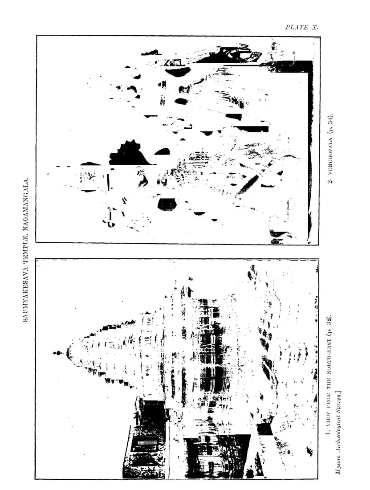
- VIEW FROM THE NORTH-EAST (p. 32)
- VENUGOPALA (p. 34)
The eaves are small and well shaped with the rafter design on the under-surface appearing only on the western side. The original parapet appears to have been composed of a row of stone turrets without any ornamentation. But only the lower part of it remains now, the upper portion being a brick and mortar parapet of recent construction. The tower is a brick and mortar structure of the Vijayanagar days. Probably the original stone tower disappeared and was replaced during Sadāśivarāya's time.
The porch appears to be a structure of the middle Vijayanagar days. Its sixteen-fluted pillars have large squarish tapering mouldings below and rough pot-shaped and wheel-shaped mouldings above and the ceilings are shallow padma domes. On the lower cubical mouldings of the pillars some images have been carved as a common in middle Vijayanagar work. The eaves which are complete for the porch are straight with no work on the under-surface.
The navaraṅga is entered by a comparatively large doorway which has Vaishṇava dvārapālas and cross-shaped and eight-petalled lotus-shaped pillars on the jambs and only a single padma with no Gaja-Lakshmī on the lintel. The navaraṅga is a largish oblong hall of twelve ankaṇas, the longer side being east to west. Whether the corner ankaṇas on the north-east and the south-east with their granite pillars and beams were added in the Vijayanagar days is difficult to be sure about; but these two ankaṇas appear to have been partly at least rebuilt at the time the porch was constructed and the two large Hoysala dvārapālas were set up to guard the sukhanāsi doorway. In the south-west corner of the navaraṅga are two images of the five-hooded cobra Ādiśesha whose body is coiled and the hood raised above it. In a small niche in the north wall is a rude image of Vishvaksēna. The rest of the navaraṅga is of Hoysala construction definitely.
The Hoysala pillars in the navaraṅga are variedly designed making the hall attractive. The four central pillars which are stout and tall belong to the bell-shaped variety. Among the others may be noted the following: thirty-two fluted, sixteen fluted, thirty-two pointed star with the alternate points long and short, and thirty-two pointed star with the alternate long points shaped like padma petals.
Of the twelve ceilings the four corner ones have now been removed and provided with ventilating towers, probably at the suggestion of Mr. Arcot Srinivasachar, formerly Muzrai Commissioner. The other ceilings are all beautifully ornamented in the Hoysala style. They have, commencing from the east and running clockwise:—
(1) a circle with inset padma;
5
(2) an octagon with inset padma;
(3) a thirty-two pointed star with inset padma;
(4) eight-pointed star;
(5) flat ceiling with nine rosettes, near the sukhanāsi;
(6) (north) cross-shaped gallery with inset padma;
(7) square with inset padma;
(8) (centre)—over a set of well ornamented corner stones having lion faces on the under surface and the Dikpālas on the inner side runs a circular gallery over which rises the dome with its ribs connected by three concentric circles of rafters. The ground between them is ornamented with conches and other designs. In the centre from a lotus hangs a large bud round which a hooded snake has wound itself.
The doorway of the south cell is rather plain having unworked dvārapāla and lintel panels. Above the lintel cornice is a row of nine towers. In the cell which has a flat roof of nine rosettes on a rough large Garuđa pedestal of granite stands the image of Vēnugōpāla with one consort. (Plate X, 2.) There is no tōraṇa and the image is of fine workmanship and appears to date from the Vijayanagar times. It wears a tapering kirīṭa and is ornamented very much like the Hoysaļa images. But its face is longish, its nose smallish, and its general appearance, though good, is different from that of Hoysaļa images. The image of the goddess standing by its side is of no extraordinary workmanship or beauty.
In the north cell whose doorways are also unworked and whose ceiling has a flat square with four padmas is seated, on a Garuđa pedestal, an image of Lakshmī-Narasimha. It appears to belong to about the same age as Vēnugōpāla and particularly his consort.
Two large Vijayanagar type dvārapālas of granite flank the rather unworked sukhanāsi doorway. The sukhanāsi has an octagonal ceiling with inset padma, below which the corner stones are similar to those of the navaraṅga ceilings. The garbhagrīha doorway whose dvārapāla and lintel panels are also unworked leads into the sanctum which is a room about 10' square. In it on a Garuđa pedestal stands an image of Kēśava whose top from the ground is about 8' high, the image itself being nearly 6' high. The image is a fine one of the usual Hoyaļa type and has his consorts on either side and a serpentine tōraṇa on the edge of which are the ten avatāras. The benign look of the image has earned for it the name of Saumyakēśava.
South Cell.
towers. In the cell which has a flat roof of nine rosettes on a rough large Garuđa pedestal of granite stands the There is nothing remarkable about the workmanship of the mukhamanṭapa or its plain pillars except that its ceiling is about 17' from the ground and the manṭapa itself is about 100' × 35'.
Mukhamantapa.
The prākāra which runs round the temple is also plain and in its corners are the following shrines :
(1) South-east—The kitchen with a deep old well connecting which is an underground cave stream.
(2) Small Lakshmī, known as Maṭapaḥlināchchār.
(3) Vaikuṇtha-Nārāyaṇa with consorts Śrīdēvī, Bhūdēvī, Nīlādēvī and the Ālīvārs.
(4) South-west corner—Sudarśanālīvār.
(5) Hanumān.
The west wall has no verandah but has a walled-up doorway in the middle.
(6) North-west—Goddess Lakshmī's shrine : the verandah in front of it appears to be a construction of the Pālļegār days.
(7) North-east —Rāmānujāchārya's shrine: the outer walls have a few paintings.
(8) Pilļailōkāchārya's shrine, yāgaśālā and the shrine of Manavāla-mahāmuni.
The manṭapa in front of Rāmānujāchārya's shrine appears to date from about the same time as the porch of the main temple, i.e. , perhaps the middle Vijayanagar period or even later.
The mahādvāra is a large and imposing structure of Vijayanagar times, though comparatively plain. It has a doorway, about 16' high and 10' wide. Over it rises a large brick tower of six storeys and a boat-shaped śikhara surmounted by masonry kalaśas. It is one of the largest Draviđian towers in the State.
Mahadvara.
Opposite to the mahādvāra of the temple and springing from a large stone platform with well-worked cornices stands a tall granite pillar with a square base and a tapering octagonal shaft, the alternate faces of which have serpentine scroll bands springing from the mouths of yāļis and running up to the round capital. The abacus is a large square slab on which is an iron frame work. On the square bottom of the pillar which is 3' wide are found the following relievos from the west in order clockwise :
Garuda pillar.
1. West—Garuđa.
2. North—Hanumān with folded hands.
3. East—The tripuṇdra between saṅkha and chakra.
4. South—Lion sitting to front on its haunches.
5°
The temple is in a fairly good state of preservation. Its prākāra and verandah need reflooring. The mukhamaṇṭapa floor should be reset and cement pointed. The inner platform floor should also be reset and cement pointed, all the plants being completely removed. A flower garden may be planted in the vacant grounds to the north of the temple, if necessary.
Conservation.
Part II: Study of Ancient MonumentsBasīāl
Srī Mallikārjunasvāmi Temple
General Description; History; Platform and Niched Towers; Elephant Frieze; Horsemen Frieze; Lions' Frieze; Purāṇic Frieze; Makara Frieze; Swans Frieze; Front Railings; Large Wall Images; Eaves and Parapet; Tower; Porch and Doorways; Navaranga; Pillars; Ceilings; South Cell; The North Cell; Main Sukhanāsi and Garbhagrīha; South Upparige; Lamp Pillar; Chennigarāya Temple; Conservation Note; Viragals; Īśvara Temple
Basrāļ is a large prosperous village, 15 miles north of Mandya, in the north-east corner of which is a fine Šiva temple of the Hoysaļa type. It has a large upparige with an outer porch on the south, beyond which is the modern street which is perhaps about 4 feet above the original street level. In the north-east of the courtyard is a small Bhairava shrine, while in the centre is the large main temple of Mallikārjuna. The latter structure is a smallish building of the highly ornate 13th century Hoysaļa type and resembles in many respects the Būchēšvara temple at Kōravangala, Hassan taluk. It is all of soap-stone and pot-stone and its inside is small, the roof being rather low and the doorways narrow. Its plan (Plate XI) is noteworthy because it is a three-celled structure or'trikūṭāchala with only the western cell having a tower as in the Kēdārēšvara temple, the Hosahoļalu temple, etc. To the east of the navaranga directly opposite to the linga is a Nandi shrine, the entrances being only from south and north as in the Būchēšvara temple of Kōravangala, where there is a Sūrya shrine similarly situated. In all, the temple contains three garbhagrīhas, one sukhanāsi on the west, one navaranga with an eastern extension, a small porch, and a Nandi shrine.
The Mallikārjuna temple (Pl. XII, 1) was built in the year 1234 A.D. by Harihara Danāyaka, an officer of the Hoysaļa Emperor Narasimha II, who claims to have fought with valour and defeated the Sēvuna armies. Harihara constructed the village tank in the name of his mother while the linga of the temple was set up after the name of his father, who very probably belonged to this village of Basurivala. The Emperor Narasimha provided the temple with lands, etc., for its maintenance in 1234, Vīra Sōmēšvara in 1237, Narasimha III in 1269 and Kempa Bairarasa Nāyaka, the Pāllēgār. in the year Kshaya which perhaps corresponds to 1625 A D. (?)
The level of the present courtyard is about 4 feet above the original level so that only the top of the original stone platform is now visible. This platform which follows the contour of the temple is intact though sunken in some places and could be removed by excavation. It has two flights of steps, one
Platform and Niched Towers.
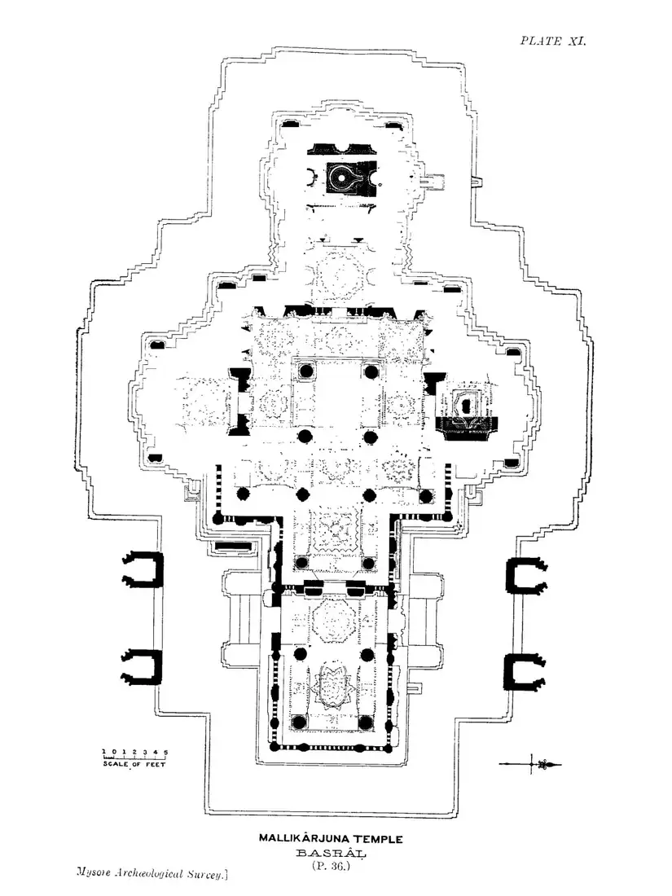
- MALLIKÁRJUNA TEMPLE BASRÁL (p. 36)
Cited in the text: p. 36 ↩
on the north and the other on the south, each of which is flanked by a small niched stone tower as at Haļebīđ. The niches are mostly filled up with earth and no images are visible inside them. Each tower is shaped differently with the squarish plan. Near the south-east niche lies a broken image of Shaṇmukha on a peacock. It is doubtful if it was originally in the niche.
The basement of the main wall has on it six friezes of sculptures as at Kōra-vaṅgala, Hosahoļalu and elsewhere, the lowest one bearing a row of elephants which have tiny riders and are mostly war animals on the march with a horseman interspersed in between, here and there. Most of the animals have their trunks hanging down from their lifted heads, while a small number are in frolicking or fighting attitudes. Some of the corners are adorned with two elephant bodies having a single head.
The horsemen are also of the usual type, cantering forth to charge, sword in hand. Some riders hold spears or banners, while others hold bugles. Near the south-west corner of the main shrine are a number of princes with attendants, holding umbrellas over their heads, while on the north-east corner of the navaraṅga several horsemen are attacking a footman, and another horseman is coming to the rescue. This last scene is positively connected with Harihara Daṇāyaka's heroism against the Sēvuṇa cavalry.
The frieze next above has a row of lions with a Saļa group or a gryphon put in occasionally. On the south-east is a row of gryphons with a man fighting them.
Lions' Frieze. The Purāṇic frieze of this temple is one of the best preserved among similar ones in Hoysaļa sculpture and contains illustrations for all the great mythological works. From near the south door begins the Rāmāyaṇa which ends right at the back of the main shrine where the Mahābhārata begins and proceeds to nearly the north doorway; thenceforward it is the Bhāgavata, while on the east part of the temple other Purāṇic episodes like Samudra-mathana, etc., are carved. The scenes are here described commencing from the middle of the east wall and running clockwise. It is a pity that some of the important scenes are hidden by the eight buttress walls which are now holding the walls of the temple together.
East Wall :—
1. Samudra-mathana.
2. Episode of Vāmana (?). Partly hidden.
3. South of Nandi shrine: The legend of Dharma Vyādha, the virtuous hunter—(a) carries about his maimed parents, feeds them, and defends them (?) (b) He is tested by God ; (c) He cremates his parents and is driven in a chariot to Kailāsa where he worships Šiva-Linga (?)
South door. —South-east of Navaraṅga :—
1. Children, perhaps Rāma and his brothers are being carried in hammocks by attendants.
2. Rāma and Lakshmaṇa (?) go hunting, the bag of deer being carried.
3. Viśvāmitra takes Rāma and Lakshmaṇa from Daśaratha. They slay Tāṭakā and defend the yajña of the ṛhishi, and slay two birds (perhaps Mārīcha and Subāhu) which attack them.
South of South Cell :—
(a) Rāma defeats Paraśurāma.
(b) Daśaratha receives the newly married couples.
(c) The attempted coronation of Rāma begins.
South-West of South-Cell :—
(a) Lakshmaṇa defends Rāma and Sītā by slaying Virādha.
(b) Lakshmaṇa cuts off Śūrpanakhī's nose.
(c) The brothers defeat Khara, Dūshaṇa and Triśiras.
South-West of Navaraṅga :—
(a) Rāma goes after the golden deer while Rāvaṇa abducts Sītā.
(b) Jaṭāyu is mortally wounded as also the golden deer.
(c) Rāma and Lakshmaṇa find their camp empty and going forth make alliance with the monkeys.
South of Main Cell :—
(a) Rāma allies with Sugrīva and his hosts.
(b) Rāma shoots through the seven palms and hits Vāli.
(c) Dying Vāli rebukes Rāma, while Rāma relents, and Tārā laments.
(d) Rāma sends Hanumān in quest of Sītā, who crosses the ocean.
(e) Hanumān fights Lankiṇī and other demous and discovers Sītā under the Aśōka tree.
(f) Hanumān rebukes Rāvaṇa in his court and burns Lankā.
(g) The monkeys bridge the ocean and Hanumān fights the Rākshasas.
(h) Rāma and Lakshmaṇa are carried on Hanumān's shoulders.
Back of the Main Shrine :—
(a) Rāma kills Rāvaṇa. Coronation of Rāma and Sītā is celebrated.
Mahābhārata begins :—
Bhīma shakes the Kauravas off their tree perch.
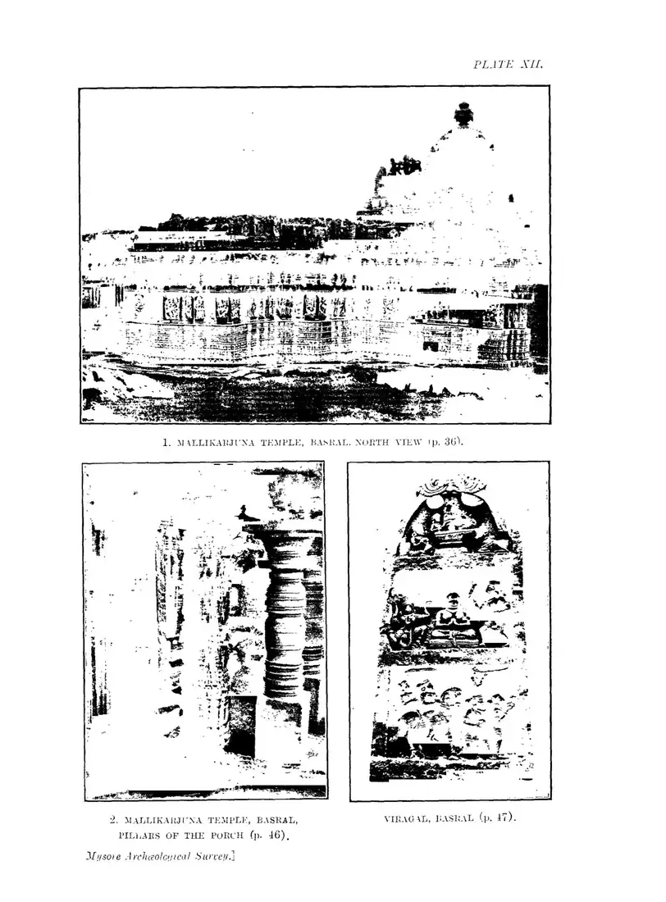
- MALLIKARJUNA TEMPLE, BASRAL. NORTH VIEW (p. 36)
- MALLIKARJUNA TEMPLE, BASRAL PILIARS OF THE PORCH (p. 46)
North of Main Shrine :—
Kuntī with her five sons, all seated, invited by Virōchana.
Bhīma slays Hiđimba and marries his sister.
Arjuna shoots the fish target before the assembly and Draupadī is married.
North-West of Navaraṅga :—
Vishṇu appears from the sacrificial fire of Drupada, and Draupadī and her brother are born. The five brothers and their queen wander in the forests.
Arjuna performs penance on the Indrakīla hill, shoots the boar, fights Śiva, obtains the Pāsupatāstra and deposits it on the Śemī tree.
West of North Cell :—
Arjuna rescues the cattle.
Here the cattle raid battle is confused with the great war and Bhīma fights Bhagadatta's elephant.
East of North Cell —
The Chakravyūha and the death of Drōṇa at the hands of Dhṛishṭadyumna.
The great war continues.
North-East of Navaraṅga :—
Bhīma mortally injures Duryōdhana.
The heads of the Upa-Pāṇḍavas.
The Mahābhārata ends here and the Bhāgavata begins with the story of Prahlāda running from left to right.
Hiraṇyakaśipu in durbar.
Prahlāda's persecution with lions, water, fire, snakes, elephants, etc.
Narasimha slays Hiraṇyakaśipu.
North Duor :—
Story of Kṛishṇa:—
Kṛishṇa is swung in a cradle.
Kṛishṇa slays the tiger, Pūtanī, Śakaṭāsura and Bakāsura.
Kṛishṇa plays in water, overcomes the Kālīṅga serpent.
Śiva seated in the midst of his Gaṇas, drinks the poison Halāhala.
The makaras are riderless and have, here and there, an interspersed ornamenta
Makara Frieze. lion's face.
The swans frieze has greater life in it and the bird is shown in its various
Swans Frieze. characteristic attitudes [like pecking, fighting, beaking, feeding the young, etc.
Around the Nandi manṭapa originally ran a row of slanting railings, only one slab of which is now remaining. It has a row of turrets below, serpentine creeper on top and obscene figures in the panels. Above the railings the wall is made up of a number of pierced stone windows.
On the main wall above the basement is a row of large images about 2\frac{1}{2} feet high representing the great gods and heroes. The bases are comparatively plain and the latā tōraṇas not very elaborate. The images, though finely worked, are of the shortish type resembling the Sōmnāthapur images. Coming from the east of the south cell they are as follows in order, clockwise :—
(1) Yōgānarasimha.
(2) Śiva standing.
(3) Tripurāntaka—the group shows Śiva shooting at, and burning the tower of the three cities above the clouds.
(4) Two-handed god—abhaya and dāna—(identity uncertain).
(5) Pārvatī standing.
(6) Vishṇu standing as Padmanābha (chakra, padma, śankha, gadā).
South of South Cell :—
(1 to 3) Sītā, Rāma and Lakshmaṇa standing.
(4-6) Umāmahēśvara with Kumāra to left and Gaṇēśa to right.
(7) Śiva standing with four hands (trident, three-hooded snake, a fan and a battle axe).
(8) Mōhinī.
(9) Goddess standing—hidden partly.
West of South Cell :—
(1) Narasimha seated peacefully (abhaya, chakra, śankha, and dāna) surrounded by consorts, Garuḍa and Prahlāda.
(2-3) Goddess (padma, goad, pāśa, kalaśa) with attendant standing.
(4) Goddess standing—rosary, goad, pāśa and phala.
(5) Kāliṅgamardana.
South-West of Navaraṅga :—
(1) Bhairava.
(2) Halāyudha.
(3 and 4) Manmatha and Rati.
(5) Goddesses dancing with a string of flowers.
(6) Durgā dancing with twenty-two arms (abhaya, broken, sword, snake, broken, vajra, battle-axe, rosary, goad, fire, svargahasta, pāśa, padma, ḍamaruga, buckler, uncertain, phala, spear, mace, bowl, lambahasta, dāna). The figure is well executed.
(6) Sixteen-handed Śiva dancing on Andhakāsura's head.
(7) Lady holding a bunch of flowers.
(8 and 9) Two monkeys fighting for jack fruit.
(10) Gōvardhanadhāri.
(11) Pārvatī standing.
(12) Garuḍa.
South of Main Cell :—
1. Pārvatī.
2. Bhairava.
3. Lady attendant.
4. Rāvaṇa lifting the Kailāsa.
5 & 6. Lady attendants.
7. Vaishṇavī.
8. Kaumāri ?
9. Dancing Sarasvatī—beautiful image damaged ; the pose is very fine.
10. Brahma standing.
11. Śiva standing (flowers, battle axe, deer and abhaya).
12. Vāmana.
13. Drummer.
14. Pārvatī standing with her sons admiring.
Back of Main Cell :—
1. Mōhinī.
2. Paraśurāma.
3. Kāpāli.
4. Śiva on throne with Nandi below.
5. Vaishṇavī.
6. Śiva standing (abhaya, trident, ḍamaruga and dāna).
7 & 8. Lady attendants.
North of Main Cell :—
1. Pārvatī dancing.
2. Drunmer.
3. Lady attendant.
4. Pārvatī.
5. Śiva dancing.
6. Brahma seated with Sarasvatī.
7. Śiva dancing.
6
8. Bhairava.
9 & 10. Mōhinī dancing.
11. Sixteen-armed Durgā dancing on the headless body of her foe.
12 & 13. Reverent monkey and Mōhinī.
14. Vēnugōpāla.
15. Goddess standing.
16 & 17. Two monkeys and jack fruit.
North-West of Navaraiga :—
1. Goddess standing.
2. Arjuna shooting the fish target (good sculpture). (Plate XIII. 1.)
3. Draupadī rushing forth with garland.
4. Lady figure.
5. Pārvatī standing.
6. Śiva dancing on Andhakāsura.
7. Kāla Bhairava dancing.
8. Lady attendant.
9 & 10. Bali and Vāmana.
11. Trivikrama.
12. Vishṇu standing (šankha, padīna, gadā and chakra).
13. Harihara standing (rosary, trident, chakra, šankha).
14. Pārvatī standing.
15&16. Lady attendants.
17. Gajāsuramardana (fine figure). (Plate XIII 2.)
North of North Cell :—
1 & 2. Lady attendants.
3. Sūryanārāyaṇa (?). Two of the symbols may be padmas or maces.
4. Viṭhala.
5. Lakshmīnārāyaṇa.
6. Lakshmī dancing.
7. Varāha standing.
8 & 9. Lady attendants.
East of North Cell :—
1. Nandi-vāhana.
2. Pārvatī standing.
3. Lady attendant.
4. Vishṇu standing, two symbols broken, perhaps Janārdana.
5. Kāļingamardana.
6. Kumāra on peacock.
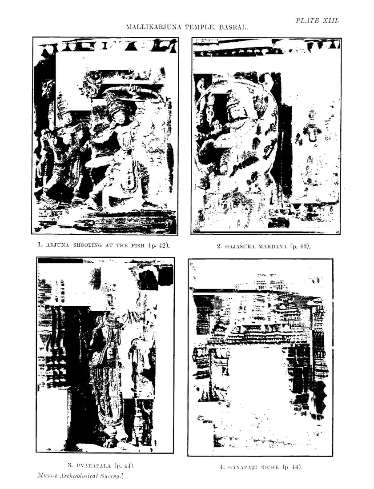
- ARJUNA SHOOTING AT THE FISH (p. 42)
- GAJASURA MARDANA (p. 42)
- DVARAPALA (p. 44)
- GANAPATI NICHE (p. 44)
Above the row of large images is an eaves-shaped cornice dividing the wall into its upper and lower parts. In the upper part is a row of turrets borne on single or double pilasters. The turrets are of varied shape; square, star-shaped, pyramidical, storied, etc. The eaves above this row have the usual dentil projections and beaded pendants. The parapet of the Basrāl temple is one of the best preserved of all Hoysaļa shrines though the sculptures have now been built into a masonry wall. It has the usual row of turrets, with a frieze of makara mouths and another of arches and kīrtimukhas. Under these arches are placed several sculptural groups, the important ones being, commencing from the east and running clockwise:—
1. Gaṇēša.
2. Sarasvatī.
3. Dancirg Šiva.
4. Vishṇu dancing, eight-armed (abhaya, gadā, šańkha, svarga, chakra, padma, lamba and dāna).
5. Brahma and Sarasvatī in sukhāsana.
6. Lakshmī-Narasimha.
7. Tāṇdavēšvara.
8. Gajāsuramardana.
9. Yōganārāyaṇa.
10. Lakshmī.
The stone tower is squarish in plan and well executed, the creeper arches and the stone kalaśa being particularly fine. Its front projection has on its eastern face a fine Tāṇdavēšvara group under an ornamental arch. Above it, in its usual position, is a Saļa group, which is one of the best preserved. The figures are life-like and the hero's pose is admirable.
Admission into the temple is through its small porch which has two doorways, in the north and the south respectively. The doorways are flanked each by two fine elephants, (Plate XVII. 3). whose uplifted heads and moving limbs, jingles and bells give them an animated appearance. Each animal is supported by horsemen and footmen and is riderless. Of course, the hind parts are too broad and the legs are set too far apart to be true to nature.
The panels meant for the dvārapālas on the north doorway jambs are uncarved, while only one dvārapāla now guards the south doorway. The porch is a narrow structure about five feet wide and ten feet long into which on the west opens the navaraṅga doorway and to the east of which is the Nandi shrine. The porch ceiling is domed and has three concentric circles.
The Nandi shrine which is also a low structure like the other temple is supported by four round lathe-turned pillars with a bench runniug round the north, east and south sides. Its domed ceiling is well worked with deep ribs and a circle set inside a ten pointed star.
The Nandi Bull which is about 4 feet high and 5 feet long has beautiful ornamentation. Its right horns and both ears are missing. Still the animal is life-like and appears as if it is about to get up.
The doorway of the navaranga which has a Tāṇdava group above its lintel is supported by two beautifully carved and well-shaped Śaiva dvārapālas, the left one of which has lost two arms. (Plate XIII, 3). On the outside of each dvārapāla is a perforated screen with a simple cross-shaped design.
The navaranga is a small low structure of the usual nine aṅkaṇas with an extra aṅkaṇa on the east flanked by stone benches. The facings of the benches are ornamented with pilasters and rosettes but the real breadth of these benches is concealed by brick walls. In the western part of the navaranga are five towered wall niches each with its own interesting design. (Plate XIII 4). Two are squared, while the other two are star-shaped as at the Sōmēśvara temple at Hārnahaḥli. They contain, in order, the following images commencing from the south :
1. Sarasvatī.
2. Gaṇēśa.
3. Mahishāsuramardinī.
4. A smaller Sarasvatī, perhaps not the original image of the niche.
In front of the Gaṇēśa shrine is a fine Saptamātrikā panel where the deities with their respective vāhanas are placed in an unusual order : Brāhmī, Māhēśvarī Kaumārī, Vaishṇavī, Indrāṇī, Vārāhī, Bhairavī (?) indicated by the scorpion vehicle, Chāmuṇdā in the shape of Durgā with a jackal on the pedestal, and Gaṇēśa.
The four central pillars and the two eastern-most ones are of the usual round shape, though short and squattish. Outside each of these pillars is a similarly shaped, lathe-turned, round support brought at a later date evidently from some other temple, probably, the Chennigarāya temple. But the most interesting pillars are the four on the eastern side of the navaranga square. They are roughly star-shaped but the monotony of the star is broken by a treble, indented, square-shaped projection which follows every three star-points. Of these also, the inner ones have acute-angled points, while the outer ones have obtuse angles.
The navaranga has in all ten squares each of which had originally a domed ceiling of the following description commencing from the east and running clockwise :
Ceilings.
1. Near doorway :—
Octagon set in two squares with serpentine band.
2. Concentric circles.
3. „ octagons.
4. „ circles.
5. „ eight pointed stars.
6. „ circles.
7. „ squares.
8. „ circles.
9. Eight pointed star.
10. Central—This is said to have been the most beautiful of the domes but was removed a generation ago to accommodate a ventilating tower.
A modest doorway supported by Vaishṇava dvārapālas leads into the small south shrine which has a domed ceiling with concentric circles. The original image was probably Vēṇugōpāla or some other form of Vishṇu. Its pedestal has however disappeared and against the wall is now kept a smaller Sūrya figure of Hoysaļa workmanship with its own seven horse pedestal. It must have been imported from some other temple. It is however a fine piece by itself with two hands only and a Chhāyā on either side.
The north cell whose doorway, ceiling, etc., are similar to those of the south retains its original Garuđa pedestal. But the image, perhaps The North Cell. Amaranārāyaṇa or some other form of Vishṇu, disappeared. About five years ago a Nāga and Nāginī group which had been lying in the navaraṅga was installed here. The group also is of Hoysaļa workmanship, fine and interesting. The male figure holds a sword while his consort has a kalaša and a padma. Above the male figure is a five-headed cobra and above the female, a three-headed cobra.
A finely carved, though small, doorway with Šaiva dvārapālas on the jambs leads into the only sukhanāsi of the temple which has a Main Sukhanasi and Garbhagriha. domed ceiling of concentric circles.
The garbhagriha doorway is much like that of the sukhanāsi while its ceiling has two sets of corner stones surmounted by a shallow padma. The main deity of the temple is a small natural linga, about 9" high, placed on a well polished low pedestal.
The upparige or mahādvāra which is south of the temple is a fine longish structure with a high roof. Its real height is now concealed South Upparige : since the ground level has risen by nearly 3 feet. A large doorway divides it into the inner and outer sections; the inner one is a manṭapa borne on tall, lathe-turned, round pillars with a large flat ceiling about 9' x 9' bearing on its nine panels Tāṇdavēsvara surrounded by the eight Dikpālakas. On the east is an open linga shrine, while on the west a doorway leads into a shrine in which is placed a damaged image of Gaṇēśa.
The outer part of the structure is a porch, now supported by two varieties of pillars, viz : thin, lathe-turned, round pillars and cross shaped, highly ornate pillars, the latter of which are ornamented by four rows of turreted pilasters. (Plate XII, 2.)
To the east of the temple is a large round pillar, about 12 feet high, over the capital of which stands a man followed by a woman. The man is about to jump down perhaps on spear points as mentioned in the Belgāmi inscription and the woman, his wife, follows her husband. It is not known who the tragic couple were but it is probable that the event must have occurred at the death of Narasimha II or Vira Sōmēsvara.
To the north-east of the temple is a small soap-stone structure of the Hoysaļa period containing a Bhairava image.
Near the south doorway is a fine large slab containing the well preserved inscription of Harihara which records the construction of the temple.
Basral was originally an agrahāra village constructed in the regular Hoysala pattern. Its tank lay to the north-east next to the Malli.
Chennigaraya Temple : kārjuna temple and between the two ran the fort wall and the moat. The fort yard was about 1½ x 2 furlongs in area and through its centre from east to west must have run the rājarīdi or main agrahāra road. At nearly the western end of the road and to the south-west of the Mallikārjuna temple was constructed the customary Vishṇu shrine. Vishṇu was not to be neglected, but his temple was much smaller and less elaborate than the Mallikārjuna temple. Its ruins now stand on the top of the raising ground about a hundred yards to the west of the village. It is a soap-stone structure to which in later times was added an outer brick wall, the stone outer wall and the upper roof having perhaps disappeared. The soap-stone slabs which outlined the platform on which the temple was reared are even now visible as also part of the stone stairway leading up to it from the ground. The temple contains a garbhagrīha, a sukhanāsi and a four-pillared navaraṅga and by its size and ruined condition reminds us of the Narasimha temple at Sōmanāthapur. The navaraṅga doorway is comparatively plain with a Gajalakshmī lintel and an uncarved dvārapāla panel. The four pillars of the navaraṅga are all lathe-turned and round with the usual Hoysaļa mouldings, though of a smaller size than usual. The ceilings are mostly flat except one or two in the middle line which contain small domes hollowed out of single slabs. In the garbhagrīha is a Garuđa pīṭha on which stood the original Vishṇu image, possibly Kēšava or Chennigarāya. But the image must have disappeared in times of trouble and a smaller and ruder image of Janārdana was made and set up very probably in the Pāllegār days. The workmanship of the image resembles that of the Lakshmīnarāyaṇa image in the recent temple to the south of the village.
Though the Chennigarāya temple is not of much artistic value, still it proves the view that nearly every Hoysala agrahāra had a Vishnu temple in the centre and a Śiva temple near the north-east.
This temple is said to possess about 6 acres of dry land to the north-east of the village. The village Panchāyet who are anxious to take charge of the Mallikārjuna temple may be encouraged to repair and look after the Chennigarāya and Lakshmīnārāyaṇa temples instead.
Some repairs were done to the building about 20 years ago when the supporting buttresses were put up. A note was sent in 1929
Conservation Note : but little action has been taken.
1. The ceiling which is leaking in two places should be repaired.
2. About 10 or 15 feet of ground to the east of the lamp-pillar should be acquired and included in the temple compound. The owners are willing to give away the land.
3. The ground between the road and the south wall of the temple should also be acquired and included.
4. The road to the south of the temple should be continued eastward and connected with the Nagamangala Road.
5. The ground to the east of the temple should be kept clean.
6. The Pūjāri who gets a salary of Rs. 1-3-0 a month may be given a decent promotion and be made responsible for keeping the temple and its premises clean.
Near the Nagamangala Road on the east of the village are a number of vīragals, two of which are remarkable : one shows a hero in the act of offering his head, while the other depicts his consort seated with folded hands preparing to die ; another shows the couple arm in arm. Other vīragals depict battle scenes. (Plate XII, 3.)
To the south of the Mallikārjuna temple near the road is a temple of Ēśvara with a garbhagrīha, an open sukhanāsi and a navaraṅga
Isvara Temple : with four round pillars and nine domes. Since the concrete roof is washed out the tops of the domes reveal the mode of their construction. The inner wall is intact but only a portion of the outer wall remains. The temple is a small one and plain, and does not deserve attention.
Part II: Study of Ancient MonumentsBūdnur
General Description—History
No heading in the body: this section starts at its printed page (48).
Hosa-Būdnūr is a village about 4\frac{1}{2} miles to the east of Mandya. It appears to have been converted into an agrahāra village with a tank a Śiva temple and a Vishnu temple, about the year 1276 A. D. in the days of Narasimha III. Possibly Vira Ballāla III was Yuvarāja, since his own name appears in the inscription as Śrī Mallikārjuna. This event must have occurred when Guttal, a neighbouring village, was a Hoysala garrison town with numerous Tamil officers.
Both the temples appear to have been constructed simultaneously and they are more or less similar in plan and general construction. Each had originally a garbhagriha, a sukhanāsi, a navaraṅga and a porch and there is definite evidence that the Śiva temple had a prākāra with a mahādvāra on the south-east. Neither temple has figure sculptures on the outer walls, though the architectural members are handsome.
Srī Kāśi Viśvēśvarasvāmi Temple
Outer view; Porch; Navaranga
The Śiva temple which is the more ornate of the two is now in a condition of advanced ruin. Its tower has disappeared as also its upper roof and a good part of its outer walls. What remains of the latter has a comparatively simple design. The platform, though visible, is now buried in the earth almost to its top. The basement has seven cornices instead of the usual five, three of them having dentil mouldings. The wall has the usual horizontal eaves-like cornice, the portion below having no ornamentation except plain and insignificant pilasters, while the portion above has a row of turreted canopies mounted on single or double pilasters. The eaves show imitation metal work and the parapet and tower have now disappeared. The last must have been of the usual squarish shape following the plan of the garbhagriha.
The stone porch in front of the temple had originally railings ornamented with turreted pilasters. The stone benches on which they stood are, however, there and the heavy ceiling is borne on two thick-set, bell-shaped soap-stone pillars. The best work in the porch is found in its ceiling which has two rows of galleries with ornamental star-shapped eaves and a dome which has a mixture of flower petals and concentric twelve pointed stars. The pendant is a fine and interesting imitation of a bunch of plantains.
The navaraṅga doorway which has a Tāṇḍavēsvara lintel and no dvārapālas, bears on its jambs the outline engravings of ornamental designs which were meant to be carved in relief at a later date. The navaraṅga is a medium-sized structure of only nine squares with a fine large Nandi or bull near the centre. The animal's face is beautiful and it is proposed to remove it to the front of the Town Hall at Mandya. In the western part of the navaraṅga are five towered niches which originally contained the Pañchāyatana images, a Gaṇēśa, a Kumāra and a Saptamātrika panel originally belonging to this temple, but are now preserved in a small new shrine about 30 yards to the east. The images are fine and prove that Hoysala sculptural work was still in a very good condition even in the last quarter of the 13th century. The four pillars of the navaraṅga are all thick and bell-shaped. Of the nine navaraṅga ceilings, the central one is the finest. Its design is similar to that of the porch ceiling but it is more airy and wider at the base and its lower gallery has the Dikpālakas.
The sukhanāsi doorway bears only the outline of the design meant to be carved upon it and it has now only the right Saiva dvārapāla, the left one having disappeared. The sukhanāsi and the garbhagriha have flat ceilings of nine rosetted squares and the garbhagriha has three wall niches. In its centre lies a large soap-stone pītha but its Kāśi Visvēsvara linga has now disappeared.
It is doubtful if this building could even be restored. It would be wiser to remove its Nandi and dvārapāla to a safer place, so that they might not be destroyed by the roof when it collapses, as it must in course of time. If possible, the two fine ceilings and the structures bearing them up may be removed and reconstructed elsewhere.
To the east of the Śiva temple in the same courtyard appears to have been formerly a Bhairava shrine which has now disappeared. The image was seen by Rao Bahadur R. Narasimhachar when he inspected the temple, but it has now disappeared and only the scorpion pedestal remains.
The mahādvāra on the south-east is a plain structure, though four of its pillars have a round cylindrical shape, perhaps of Hoysala workmanship.
Srī Anantapadmanābhasvāmi Temple
(Plate XIV, 1.)
Outer View
Conservation Note
No heading in the body: this section starts at its printed page (49).
To the west of the village on a high ground is the old Hoysala temple of Vishnu known popularly as Anantapadmanābha. (Plate XIV 2). This temple is very similar in design and construction to that of the Kāśi Visvēsvarasvāmi temple which it resembles very closely. It is also in ruins, its porch having completely collapsed as also the front part of its outer walls.
An excavation to its west reveals the heavy foundation of large rough stones on which the temple was reared up by Hoysala engineers.
Outer view : The old prākāra and the platform are also visible here and there. The walls are similar to those of the Kāśi
7
Visvēšvarasvāmi temple except that the basement has five cornices instead of six. The well proportioned tower shows that the detailed ornamentation had not been completed when further progress was interrupted. Near the porch are now lying its round pillars and parts of its domed ceiling and other pieces, while the turrets crowning the pilasters of its railings are now adorning the small recent structure about 10 yards to the east.
The navaraṅga doorway bears outline sketches as in the Šiva temple. The navaraṅga which is also of nine squares only has its heavy bell-shaped pillars and its two towered niches. These latter, probably, housed an image of Vishnu now broken and placed near the door, and another uncertain figure. The central ceiling has an interesting umbrella-shaped design imbedded in a dome. In the south-east corner of the navaraṅga stands a stone slab bearing an inscription of Narasimha III dated Šaka 1191 (1267 A. D.).
The sukhanāsi doorway is an elaborately carved piece. Two dvārapālas are now lying on the ground outside the temple. The ceiling of the sukhanāsi itself and that of the garbhagriha are both flat.
The garbhagriha doorway has Lakshmī on the lintel but inside the garbhagriha there is nothing remarkable. The main image was removed and housed safely in a small building about 15 yards to the east of the temple.
The main image is about 6 feet high along with the pedestal and is a figure of Vishnu as Padmanābha (śankha, padma, chakra, gadā). The tōraṇa has on its outside the usual 10 avatāras while below the image is its Garuḍa pīṭha.
It is impossible to preserve the porch and the outer walls of the navaraṅga.
The trees should be removed. If the collapsed roof stones are removed and the roof covered over with concrete it is possible to save the rest of the building including the tower. In that case the main image may be installed once again in the temple. The Anantapadmanābha temple can be seen very clearly from the railway line which passes about 300 yards to its north. Būdnūr is now a Railway Flag Station.
Among the images may be mentioned one of seated Vishnu in padmāsana, perhaps Dhanvantari, which is now kept in front of the new structure housing the new image.
Part II: Study of Ancient MonumentsGuṇḍlupeṭ
Guṇđlupet is a small town on the left bank of the Guṇđlu river which is only about 20 feet wide here. It consists of a fort or kōte with the Vijayanārāyaṇa temple in the middle and a pēte with a small new Rāmēšvara temple. One mile to its east is the site of an old town with four temples still preserved. Local tradition states
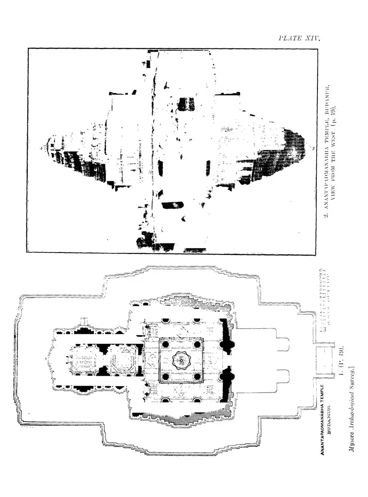
- (p. 19)
- ANANTAPADMANÁBHA TEMPLE, BUDANIUR VIEW FROM THE WEST (p. 19)
that the temple of Vijayanārāyaṇa was one of the five temples built by Vishnuvardhana Hoysala.
Rāmēśvara Temple
The earliest of the temples and the only one with dateable inscriptions is the Rāmēśvara temple which faces east. In size and plan it resembles the Vaidyēśvara temple at Talkāđ and the inscriptions show that it was built (?) and endowed by Kumāra Kampaṇṇa (II) in 1367 A.D. The plan is squarish, showing a garbhagrīha, a sukhanāsi and a four-pillared navaraṅga with an entrance porch to the east and one to the south. The tower is of brick and the rest of the building of granite. The pillars of the porches and of the navaraṅga are square at the bottom, the shaft of each being firstly octagonal, then sixteen-sided with flutings and lastly thirty-two sided. A broken image of Vīrabhadra is placed in the navaraṅga. The original linga is now in the Rāmēśvara temple in the pēte while the Nandi is in Pātāladamma's temple near the Taluk Office. The sculptures on the pillars mostly represent dancers, drummers and musicians and acrobats. The dimensions of the building are generous and around the garbhagrīha on the cornice are several Kannađa inscriptions. Rāmēśvara was the grāmadēratha in the old days of Kumāra Kampaṇṇa. A leopard lives in the garbhagrīha now.
Pārvatī Temple
To the left of the Rāmēśvara temple is a smaller Pārvatī temple of about the same type but somewhat of inferior workmanship. The Pārvatī image has been removed inside the town.
The roof of the temple is in a very bad condition and leaking and several beams are cracked. But it could be restored with expenditure and effort.
Paravāsudēva Temple
General Description; Pillars; Doorways; Images
About 50 yards to the south-west of the Rāmēśvara temple and facing west are the temples of Paravāsudēva and his consort. The Paravāsudēva temple is a fairly large structure of granite with a garbhagrīha, a sukhanāsi, and a spacious indented square-shaped navaraṅga with a cell to its north and one to its south. The structure of the building, its ornamented sukhanāsi doorway and the sculptures on its pillars indicate that it was built some time during the early Mysore period. In front of the temple was originally a large porch which was seen by Mr. R. Narasimhachar in 1916. This was later on removed and rebuilt in front of the Vijayanārāyaṇa temple.
75
74-45
The temple has a garbhagrīha, a sukhanāsi, a covered pradakshiṇa, a cross-shaped, large navaraṅga with north and south niches and a porch, which has now disappeared. The walls around the garbhagrīha are ornamented with the usual crude long plain pilasters with, here and there, a turreted arch, and the whole temple is raised on a narrow stone platform resembling the one of the Vaidyēšvara temple at Talkāđ.
The pillars of the navaraṅga are shortish and have three cubical mouldings connected by sixteen-sided cubical shafts. On each side of each moulding of the thirteen pillars is a carved image in relief, the subject being the ten avatāras, Hanumān, Nandi, Lions, Gaṇēša, Rāma, Ēishis, etc. On the inner face of the second pillar to the south-west of the sukhanāsi doorway the image of a prince seated amidst his standing courtiers is interesting. He is evidently Chikkadēvarāja Ođeyar, who is definitely stated in the Kannađa Annals of Mysore to have built and endowed the temple for the merit of his father Dođđadēvarāja. This statement is fully supported by a set of copper plates issued by Chikkadēvarāja himself in 1674 A.D. This unpublished inscription says :—
“Thus the king Chikkadēva—a stage-manager in the beautiful drama played by the actress, that is his command, dancing over the jewelled crowns of all kings—while engaged in performing all the acts of dharma, desired to construct an agrahāra. After investigating the places in his kingdom of the Karṇāṭaka, which were attractive, delightful, enjoyable and holy, he fixed upon one which was the best of all and suited for his act of charity. The selected spot was Madaļanāđu, an ornament to the earth, agreeable and delightful, situated two yōjanas to the south of the Kapilā river, to the north of the Nīlāchala (the Nīlagiri Hills) to the north-east of the Kañjagiri (the Gōpālasvāmi-betṭa), half a yōjana to the west of Trikadambanagarī (Terakaṇāmbi) and adorned by the river Kauṇđinī. There, on the sacred west bank of the river Kauṇđinī, the king, desirous of making an everlasting good act of dharma, in order that his father King Dođđa-Dēvarāja might attain the region of Vaikuṇṭha, constructed a spacious temple, according to the śāstras, complete with a vimāna, manṭapa, high compound wall and tower, (dedicated) to Vāsudēva, the god of gods and the wielder of the bow Šārṅga, dwelling with joy on the couch formed by the coils of Ananta and surrounded by Śrī, Bhū and Nīlā. And for the performance of the daily worship and other services in the temple, he brought from different parts Śrīvaishṇavas, Madhva Brahmans and Advaiti Brahmans, possessed of gentle disposition and good character, proficient in the Vēdas and Śāstras, versed in the secrets of both the systems of Vēdānta (Sanskrit and Drāviđa), deep in the knowledge of Tamil scriptures, ever peaceful, free from anger and other passions, possessed of large families, versed in the Śrauta and Smārta ritual and engaged in tending the sacred fire ; and for their habitation
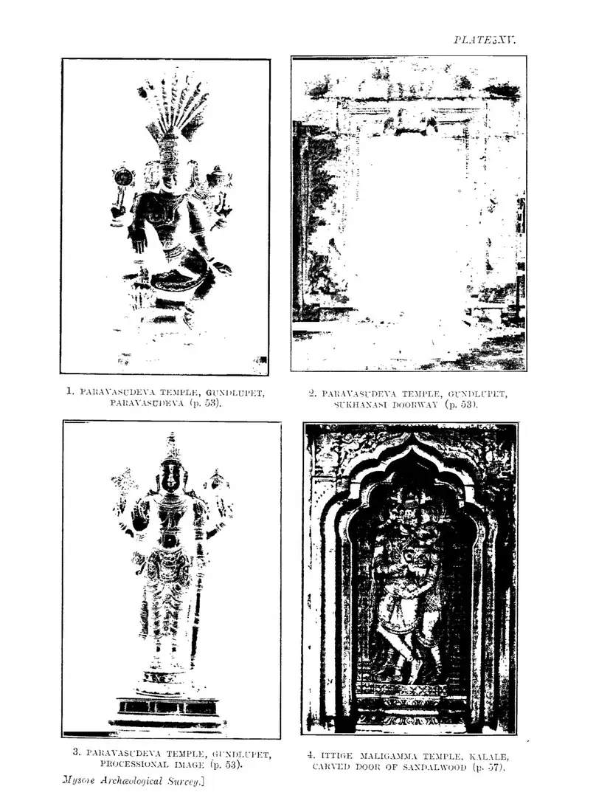
- PARAVASUDEVA TEMPLE, GUNDLUPET PARAVASUDEVA (p. 53)
- PARAVASUDEVA TEMPLE, GUNDLUPET SUKHANASI DOORWAY (p. 53)
- PARAVASUDEVA TEMPLE, GUNDLUPET PROCESSIONAL IMAGE (p. 53)
- ITTIGE MALIGAMMA TEMPLE, KALALE CARVED DOOR OF SANDALWOOD (p. 57)
and maintenance of their families he made an agrahāra endowed with excellent vyīttis of lands.”
The doorways are all good, that of the sukhanāsi being the best of the lot (Pl. XV, 2). The latter resembles the doorway of the
Doorways. Vaidyēśvara temple at Talkād, though simpler. On each jamb stands a group consisting of a chāmaradhāriṇi and a man standing on a yāli. A dvārapāla and a storied turret supports each jamb. On the lintel is Gajalakshmī.
The large porch, as already stated, is now in the town. The north and south cells of the navaraṅga appear to have contained the images of the goddesses Śrī and Bhū.
To the left or south of the Paravāsudēva temple is a smaller temple of Kamalavallī, his consort, perhaps of the 17th century.
The images are all kept now in the eastern extension of the Vijayanārāyaṇa temple.
The chief image of Paravāsudēva, about 5' high along with its double pedestal, (Pl. XV, 1) is seated on the coils of Ananta and under his
Images. spreading hood. The god is in sukhāsāna, his hands being thus disposed: the first resting on raised knee, the second holding chakra, the third śaṅkha and the fourth resting on Ananta. This image and that of the goddesses show rough outlines, longish, pointed, but flat noses, lips arched like crescents, abnormally large eyes, abdominal muscles and shallowish carvings.
The left hand of the old Dodđadevarāj ntsava-vigraha (Pl. XV, 3) is now repaired. The right front hand of the new Apratima vigraha is only in the dāna pose, though the fingers are raised. The other images kept in this navaraṅga are: Śrī, Bhū along with the god, Kamalavallī, Āṇdāl, etc. None of these has a tōraṇa or prabhāvali.
The original porch of the Paravāsudēva temple which is now in front of the Vijayanārāyaṇa temple is a decent structure about 24' x 20' borne on 12 pillars, the four front ones being well sculptured and ornamented. They have in front brackets of warriors riding on lions which are rearing upon the backs of elephants. The three cubical mouldings are well sculptured with relievos. One of these is a king seated stylishly on a high bench or throne and reclining on a round pillow. He wears a long knot over his head. His right hand holds what looks like a flower while his left rests on his raised knee. The figure has been identified as that of Chikka Dēva Rāja by tradition.
Vijayanārāyaṇa Temple
Conservation
The Vijayanārāyaṇa temple which is situated in the old fort or kōṭe close to the Mysore-Nilgiri road appears to have been built in stages at three different times. Of these the last is the manṭapa or porch already described in connection with the Paravāsudēva temple. The second is the navaraṅga with four fluted pillars with three cubical mouldings each sculptured in relief. The ceiling is of the usual Vijayanagar type with flat granite slab and a single relief padma in the centre. The south part of this navaraṅga is now converted into three shrines housing Paravāsudēva and his consorts. Opposite to them are the Ālyārs.
The most interesting part of the building, however, is the main shrine of Vijayanārāyaṇa. This is a small granite structure of the Vaidyēśvara type with a garbhagrīha and a sukhanāsi only, which have been later on covered over with a pillared enclosed pradakshiṇā as at Toṇṇūr and Seringapatam. The garbhagrīha wall has no inscription but its storied turrets and prominent pillar bearing kalaśas, √ declare it as a work of the 13th or 14th century. The turrets have square and boat-shaped śikharas. The sukhanāsi houses the utsavamūrti or Janārdana with abhaya pose and with consorts.
The garbhagrīha doorway is a modest piece resembling the Paravāsudēva doorway in style.
The main image of Vijayanārāyaṇa is really Janārdana with the front right hand giving abhaya and also holding lotus. There is a tōraṇa behind having the ten avatāras and imitating Hoysaṣa designs. The image which, along with the pedestal, is about six feet high is fine and imposing though it also shows the characteristics of the 14th century workmanship. It is difficult to agree that it belongs to the early Hoysaṣa days as asserted by tradition which ascribes the monument to Vishṇuvardhana. Even the stone used is harder than the Hoysaṣa soap-stone. It may be attributed to the early Vijayanagar days.
All the three temples are old ones and thus may be declared Protected Monuments and assigned to Class II for conservation purposes. The Paravāsudēva temple is a large one with well carved pillars and doorways. If restored, it would be a fairly good specimen of early Mysorean architecture. The images of Chikka Dēvarāja Ođeyar may be well cleaned and preserved, the name being painted under both the relievo sculptures. If funds are available, the Paravāsudēva temple may be fully restored.
Part II: Study of Ancient MonumentsKaļale
About five miles to the south-west of Nanjanguđ the village of Kaṣale situated in a fertile plain has an old fort-wall, the east gate of which was near the Āṇjanēya temple. Mr. Rangaswami Iyengar of the place has an old paper manuscript which gives the history of the place and of the Dalvoy family. After Krīshṇadēvarāya conquered the Ummattūr chief, two of the emperor's officers named Kānta and Krīshṇa settled down at Kaṣale and their descendants are said to have ruled here for twelve generations.
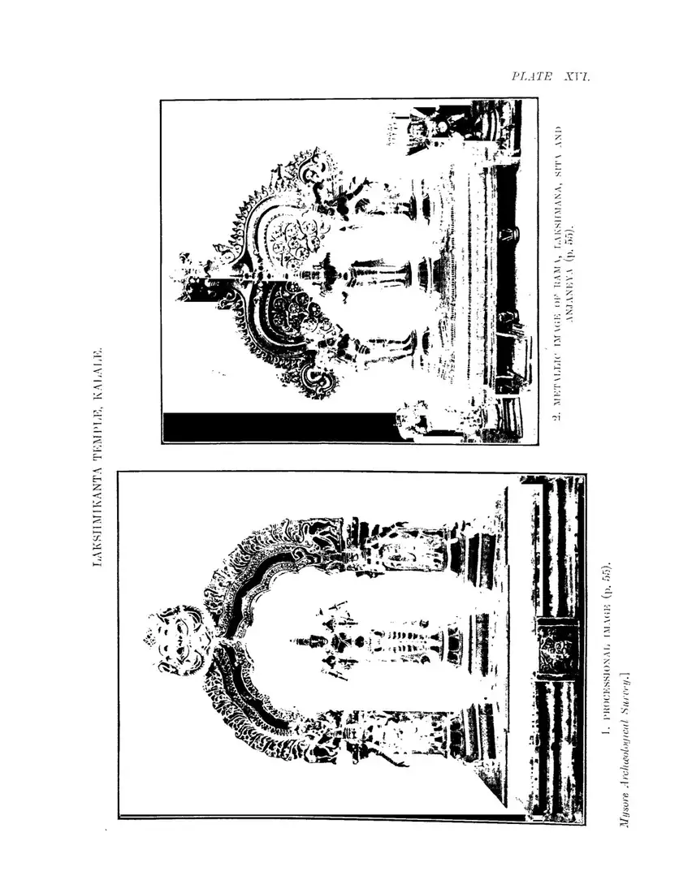
- PROCESSIONAL IMAGE (p. 55)
- METALLIC IMAGE OF RAM Y, LAKSHMANA, SITYA AND ANJANEYA (p. 55)
Lakshmīkānta Temple
Conservation; Sōmēšvara Temple; Pañchalinga Shrine; Cheluvāmba Talab
No heading in the body: this section starts at its printed page (55).
The temple appears to have been constructed in at least three stages, in about 1300, about 1500, and about 1700 A. D.
The main shrine, its sukhanāsi, the cylindrical pillars of its navaraṅga and its outer walls decorated with a row of pilasters and a dentil cornice in the middle, belong to the late Hoysala times. This portion is not at all ornate and must have been a small minor temple of the Hoysala period or of the very early days of the Vijayanagara Empire. The image of Nārāyaṇa, three feet high, has Hoysala look though the absence of the ten avatāras from the stone prabhāvali and the straight-sided conical kiriṭa would suggest the date 1350 or 1360 A. D. The brick tower and parapet, however, are much later structures.
The older navaraṅga was probably ruined and about 1500, the navaraṅga of nine aṅkaṇas was rebuilt by Kāntaiya, the old pillars being used and the roof and the walls being reconstructed, with a vađagalai-nāma between chakra and śaṅkha on the navaraṅga doorway. In the western part of this navaraṅga are now kept two Ālṣvār images (both seated with chinmudrā like Nammālṣvār, though one of them is called Bhāshyagār). In the next aṅkaṇas are also kept several metallic images among which the best is a fine Rāma group (Kōdaṇđarāma, Lakshmaṇa, Sītā and Hanumān). (Plate XVI, 2.) The prabhāvali or tōraṇa is well designed and has the ten avatāras in the latā-tōraṇa with a high Sinhalalāṭa. At the same time as the reconstruction of the navaraṅga, and along with it, were built the outer navaraṅga of twelve aṅkaṇas with its square pillars having sixteen-sided fluted shafts, and its two porches, one of three aṅkaṇas on the east and another of one aṅkaṇa only on the south. In the centre of this navaraṅga is now kept a metallic image of Nambinārāyaṇa with consorts, said to have been brought from Vijayanagar by Kānta and Krīshṇa. (Plate XVI, 1.) The images show a good sense of proportion and are fine, like the metallic image of Kīrtinārāyaṇa at Talkāđ, which is of the same period and of Vijayanagar workmanship. The other images in this navaraṅga are Hanumān and Vishvaksēna and a metallic Garuđa-vāhana repaired by Sardār Kāntarāj Urs.
The east doorway is flanked by two moustached dvārapālas and its short pillars, whose shafts have thirty-two fluted sides, show on the cubical mouldings images of devotees, wrestlers, musicians, etc., in relief. The roof has projecting granite eaves above which on the parapet are several stucco niches finely designed and having Vaishṇava stucco images, the central one being Ranganātha attended by two bearded figures pointed out as the Dalvoys, and another figure of a female, evidently the wife of one of them.
The south porch which has pillars with sixteen-sided tapering shafts, is probably a later addition of about 1700 A. D. about which year the Dalvoy Sarvādhikāri Cheluve Urs is said to have built the rest of the temple consisting of the brick gōpura over the mahādvāra, the huge mukhamaṇṭapa of about fifty plainish tall pillars (20 feet high), the prākāra with its verandahs and rows of niches, the shrines of Dēśika and Jīyar and the yāgaśālā and pākaśālā. There is nothing architecturally remarkable about this portion. The images in the prākāra niches are in order from the south-east clockwise from Hanumān :
1. Jīyar.
2. Twelve Āļvārs and a Paravāsudēva group with the god, Śrī, Bhū and Nīlā, the latter holding flowers.
3. Āṇdā! shrine with sanctum, sukhanāsi and bed-chamber and mukhamaṇtapa and pātāļānkaṇa.
4. Patṭābhirāma group.
5. Four-armed Vēṇugōpāla—not very beautiful, but famous because the royal poet Vīrarāja has sung his praises in his Telugu work, the Mahābhārata.
6. Lakshmīnārāyaṇa.
7. Janārdana, called Varadarāja, and said to have been brought by Mr. Arcot Srinivasachar from the Sōinēśvara temple.
8. Kēśava with consorts.
9. Rājamannār Kṛishṇa with consorts. The god is two-handed and holds a flower in the right hand while he reclines on a stick held in the left. (Plate XVII, 1).
10. Śrīnivāsa with consorts.
11. Janārdana, called Vāsudēva (abhaya, chakra, śankha and gadā).
12. Kōdaṇṭarāma group.
13. Lakshmī shrine similar to Āṇdā!'s; but the goddess is four-handed and seated without elephants.
14. Bhāshyagār.
15. Kūrattāļvār.
16. Dēśikar : The shrine was originally of one ankaṇa and about 1800 A. D. was enlarged into two by Tenginamarada Narasimhachar. The metallic image is standing, wearing large pot-like kirīṭa and holding abhaya and pustaka.
The series ends with Garuḍa.
Front :
On either side of the mahādvāra on the east side of the prākāra wall is a verandah having four elegant sixteen-sided pillars. In the field in front are three large manṇtapas :—
1. Navarātri-maṇtapa with towered cell, platform and large mukhamaṇtapa of huge pillars, three feet square and 20 feet high (on the north).
2. Opposite to it facing north a similar Kṛittikōtsara-maṇtapa ;
3. In front stands a small Vasanta-maṇtapa .
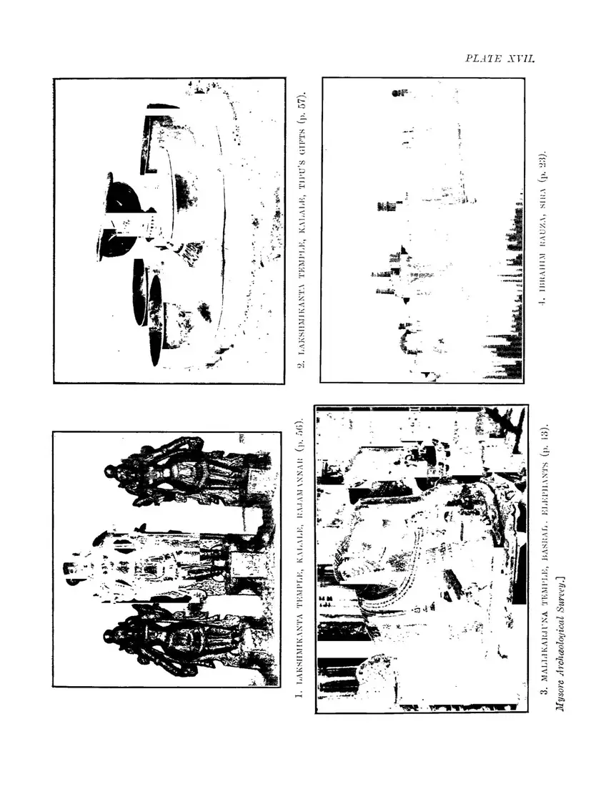
- LAKSHMIKANTA TEMPLEJE, KALALJE, RAMAM ANNAR (p. 56)
- LAKSHMIKANTA TEMPLEJE, KALALJE, TIPU'S GIFTS (p. 57)
- MALDJEKAIJUNA TEMPLJE, BASRAL. ELDERHANTS (p. 13)
- TIBRAHM RAUZA, SIRA (p. 23)
The temple has a number of the birudas of the Mysore Rājas, like Śaṅkha, Chakra, Śarabha, etc., with the inscriptions of Naṅjarājaiya, Cheluve Urs and others. Among the silver vessels of the temple are six, a silver plate, four large bowls and a cup on a stand, (Pl. XVII, 2) bearing the inscription “Śrī Ma—Su la tā na—Pā da śā ha ra—dhar ma.” It is said that the utsava-mūrti was carried away by Tipu to Seringapatam and was returned with the vessels after one of his sons died.
Mr. Rangaswami Iyengar has with him the temple kañita which commences on the 1st page with the accounts of Ś. 1595, Vijaya, i.e. , A. D. 1673. It is a good example of a kañita with its long sheet folded into pages as in a map.
About 50 yards to the east is a shrine called Itṭige Malagamma which commemorates the self-immolation or sati of a lady of the Dalvoy family perhaps Lingājammaṇṇi, wife of Lakshmi Kanta Vodeyar. The sandalwood door has a fine sati group of the lady kissing her husband in heaven. (Plate XV, 4). The figures are five feet high. They may be preserved with varnish. The roof is damaged and needs repair.
The monument, though not of high artistic merit, is intimately connected with the Dalvoy family from which have come so many of the queens of Mysore and which played a great part in the past history of Mysore. On these grounds the temple and its manṭapas deserve to be protected and set under Class II for conservation. The roof of the goddesses' shrine and near the gōpura and kitchen is leaking. These need repair. The temple is not kept clean. It has a large number of poorly paid servants. The establishment is Rs. 36-12-0 and pañitara Rs. 12-0-0. One more watchman may be appointed and the premises kept cleaner.
About 100 yards to the north-east, is situated the Sōmēśvara temple which appears to be a structure of C. 1500 A. D. It has the main temple having a garbhagriha, a closed sukhanāsi, an open sukhanāsi, a square navaraṅga and a three-aṅkaṇa porch to the east and another to the south. There is no ornamentation. The Amman shrine (much ruined) has a good image of Amṛitēśvarī (named after Amṛitamma, mother of Chikka Dēva Rāja).
The Pañchalinga shrine behind has ornate square short pillars. It would cost much to repair the temple. But urgent attention is needed to prevent danger to life. On a front pillar is an image of the builder, perhaps a Dalvoy.
Cheluvāmba Talab is a large tank supplying water to about 1,000 acres of wet land and built by the queen of Dodđa Dēvarāja Ođeyar.
Cheluvamba Talab. It is 15 feet above the level of the town, and to its south. On the way to it by the roadside is a stone inscription of the days of the Mysore Rājas.
8
PART—III NUMISMATICS.
Part III: Numismatics
THE CHĒLAS
(Plates XVIII.)
Uttama Chōla
We have no definite data to assign any coins to the Chōlas before 967 A. D. The first Chōla sovereign whose coins are known is Uttama Chola Parakēsari, who became co-regent with Parāntaka II in 969 A. D. and was senior sovereign from 970 to 985 A. D.
TYPE A :— Tiger and Fish.
1. Ar. '7 Wt. 62'7 Impure Silver 1
Obverse :—In ring of dots, under a royal umbrella flanked by two fly-whisks, is a row of figures ranged on a broad line representing the ground. The figures are from left to right :—(1) Upright lampstand (2) a strung bow (3) a tiger seated on its haunches facing to right with tail near the forepaws like a cat (4) a line representing a dagger or only a mark separating the panels (5) two upright fish (6) a lampstand.
Reverse :—In ring of dots two line Nagari legend :
U tta ma
Chō la ħ
2. Ar. '75 Wt. 62'6
Similar to No. 1, but from a different set of dies; the characters assume slightly different shapes.
The make and type of Uttama Chōla's coins indicate earlier issues, perhaps Chōla, which have not yet been known. No corresponding gold coins of Uttama have been found; but Elliot 2 mentions a copper coin of similar type. The shape of the characters, especially 'tta' and 'cha' are noteworthy as they lead on to the later forms of Nandināgari. The use of silver is interesting as that metal fell out of general use after the 11th century. The presence of die-striking contrasts favourably with the punch marking method prevalent in upper Dakhan. It is probable that the traditions of the Pallavas passed on to the Pāṇdyas in the 9th century and from them to the Chōlas in the 10th century. How far the Rāshṭrakūṭa coinage influenced the Chōlas is unknown as no coins have till now been definitely assigned to the former.
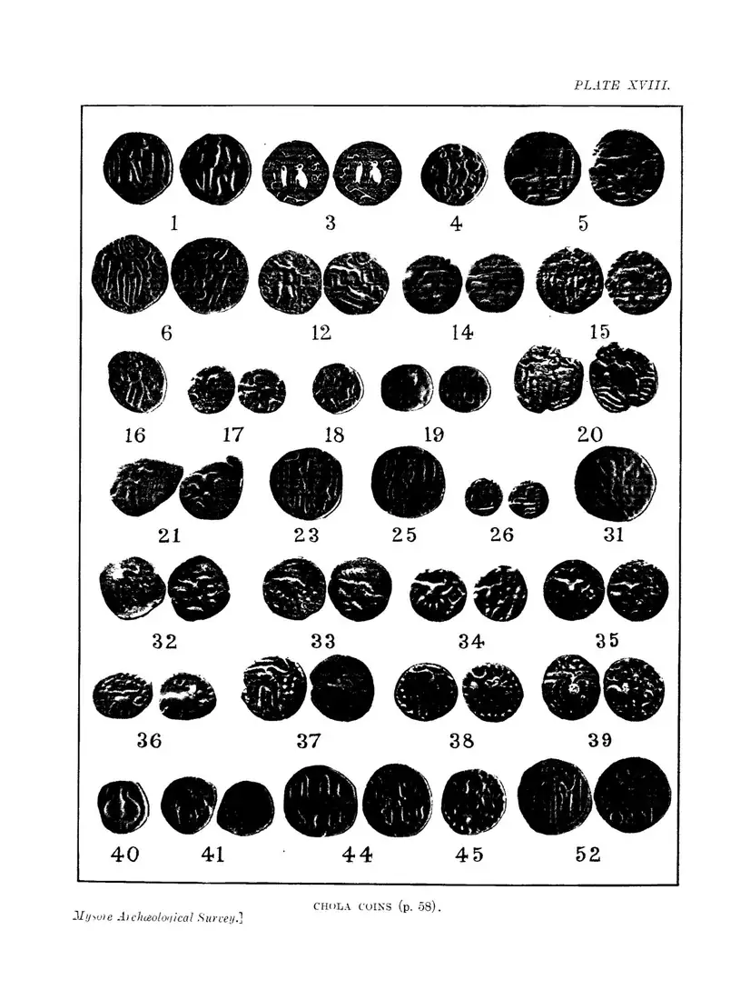
- CHOLA COINS (p. 58)
Cited in the text: p. 58 ↩
Of the emblems, the umbrella flanked by 'Chāmaras' or flywhisks stands for sovereignty or overlordship and the lampstands show the sanctity of the Empire. The bow indicates Chera, the Tiger, Chōła and the Fish, Pāndya and the group shows that Uttama Chōła claimed sovereignty over the whole Tamil country and Kērała and that Rāja-rāja succeeded (in 985 A. D.) to a well-established empire. The use of the Nāgari alphabet and of Sanskrit is interesting showing perhaps that the Chōłas who represented the north Tamil country stood more for Sanskrit than for Tamil.
(Most of these Chōła coins are figured in E. C. S. I)
TYPE B:—Tiger, Fish and Grantha legend.
3. Gold—wt. 50—60 grains. Facsimile in wood cut. 1
Obverse:—In circle of dots, fish on left and seated tiger on right facing left with Grantha legend around:
U tta mā sō ła n
Reverse:—Similar to obverse.
Elliot reads the legend as 'Rāchō Koṇu Chōła,' which cannot be accepted.
4. Ai. '6
Similar to No. 3—but the legend reads: Chaṇ(m)tra chā nta' i.e. , 'Chandraśānta' which is either a new name or a title. The '8'-like figure which has been read as 'm' is Grantha. With some doubt the legend may also be read as Cha n (8) ta Cho la n. Raja raja I had the title 'Chaṇda Parākrama' the first word of which may possibly be the same as the first word of the legend. But the device of Tiger and one fish only and the Tamil legend may indicate a different person as also the '8'-like figure. The meaning of the latter is in this case doubtful. It may be a modification of the Telugu figure 4.
RĀJA RĀJA I.
Type A—Tiger and Fish
Type B—Tiger; Fish and Grantha legend
5. Ar. Wt. 51½ grs.
Rāja Rāja I
No heading in the body: this section starts at its printed page (59-64).
Obverse:—Similar to No. 1, but Nāgari legend below the row of figures:—
Type A—Tiger and Fish and King seated
No heading in the body: this section starts at its printed page (59).
Śrī Rā ja Rā ja
Reverse:—The King, wearing 'dhōti' (loin cloth) and a large knot of hair (or crown?) behind his head, is seated at ease with one knee folded and
1 . E. C. S. I. P. 152 G. No. 151.
8 resting on his seat and the other folded and raised with foot on seat. 1 The right arm rests freely on the right knee, while the left hand holds a conch near his face which is turned to right, the wrong end of the conch being nearer his mouth. In right field, between two lamp stands and under an umbrella is a tiger seated on its haunches and facing the king.
Type B—King standing and also seated
No heading in the body: this section starts at its printed page (60).
This type is important as it links up the coins of Rājēndra with those of Uttama Chōla. The numerous other types of Rāja Rāja were perhaps his innovations, while this type is the imperial type inherited by him. The poor quality of the metal in the Chōla silver and gold issues is perhaps due to the constant wars waged by the imperial Chōlas.
TYPE B :— King standing and also seated.
6. Ai '75 Poor gold with much silver. 2
Obverse :—In circle of dots, king standing wearing an upper and a lower 'dhōti' shown by two lines near the trunk and three lines parallel to the legs, a large knot of hair (or crown) behind his head. His left hand holds a lotus near his face, and the right hand is stretched out and appears to hold in its crudely represented fingers a sceptre set with three hooks. Nearby is what looks like a small lamp stand. Under the king's feet is a lotus creeper with a conch on the left end (and sometimes on the right end) with a flower opening in front of the king's feet. Above the lotus and in right field are four dots each set in a small circle, the whole forming a square. Above these is a large pellet perhaps standing for the sun. On most silver and copper specimens a crescent moon takes the sun's place.
Reverse :—In ring of dots king seated similar to No. 5; seat indicated by a mat. In right field three line Nāgari legend :—
Śrī
Rā ja
Rā ja
7. Ag. Silver.
Similar to No. 6, but crescent in place of sun on obverse.
8. '75 Copper large.
Similar to 7, very common.
9. Ae. Copper, half size.
Similar to No. 6
1. Hultzsch :—Ind. Ant. 1896 p. 317.
10. Copper : Quarter size.
Type C—'Lankāvira'
No heading in the body: this section starts at its printed page (61).
Similar to No. 6.
11. Copper : 1/8th size.
Similar to No. 6, Figures rude.
This type, found in gold, silver and copper is clearly that of Rāja Rāja I who became king in 985 A. D. The figures have sometimes been described as those of Hanumān or some monkey and all coins bearing this kind of figure were once termed Ceylon type coins. It is possible that Ceylon had this type before the day of Rāja Rāja. The crude and conventionalised form in which it appears on Rāja Rāja's coins indicates that similar types preceded it. There cannot be much doubt that the ultimate originals of the figures are the coins of Chandragupta II, Vikramāditya. The obverse is a modification of the standing king on the obverse of the archer type; and the reverse of the obverse of the conch type 1 . Codrington argues that the wedge shape of the top line on the heads of the letters of the Lankēśvara coins makes them about half a century earlier than Rāja Rāja 2 . However it is interesting to note that the Gupta types lurked somewhere for nearly five centuries and reappeared in a modified form on the coins of Rāja Rāja. Gupta coins are very rarely found in the Dakhan and the places where their finds are known are in Upper Dakhan. 3 It is likely that either in Ceylon or in the Chōła or Pāṇdya country the Gupta type continued to appear at intervals.
The reappearance of gold in the currency and the varied denominations of the copper coins are also noteworthy.
TYPE C :—' Lankavira'.
12. Ai Wt. 68·5.
The proportion of silver and gold varies in different specimens. In some it is merely a rush of gold 4 .
Obverse :—Similar to No. 6.
Reverse :—Similar to No. 6, but legend reads :—
Śrī
Lam kā vī ra
HALF SIZE.
13. Ai Metal inferior.
1. Allan : Gupta Coins p1. VI, Nos. 11 and 9; also ibid last Plate Nos. 18 and 19.
2. ibid P: C.XXX
3. Codrington : Ceylon Coins and Currency P. 72 and note.
Type D—Boar and Tamil legend
No heading in the body: this section starts at its printed page (62).
Obverse :—Similar to No. 6, but with no sun ; aud a full bloom lotus on hand showing to front. The figures are more ornamental.
Reverse :—Similar to No. 6, but legend :—
Śrī
Lam kâ (ki)
vī ra
As Rāja Rāja assumed the title ‘Lankēśvara,’ it is generally thought that he issued some of the above coins in imitation of the Ceylon kings. That the characters on these coins are slightly different from those appearing on the coins with the legend ‘Rāja Rāja’ is clearly seen. It is very likely that the Lankēśvara type was originally Ceylonese and that Rāja Rāja adopted it after conquering that country, and for his Indian coins changed only the legend. Prinsep reads the legend as ‘Śri Lankē-śva-ra’; Krishna Sastri as ‘Śrī Lanka-simha’; Codrington as ‘Śrī Lanka Vishnu’ and Thomas ‘Sri Lanka Veha’. The Gupta characters of the 5th century would help us to read the legend on No. 11 which appears to be more ancient than No. 10 as ‘Sri Lankā vī ra’. Codrington makes a detailed comparison of the figures on the three varieties of the Lankāvīra type and concludes that the earliest of them dates from C. 900 A.D. while Rāja Rāja’s issues are copied from Type III C. which dates from C. 1000 A. D. Thus it would be possible to suggest that Rāja Rāja’s Tiger and Fish type was the earlier one issued perhaps before the conquest of Ceylon, while after that event he adopted the Ceylon type for his coins.
TYPE D:—Boar and Tamil legend.
14. Ae '65
Obverse :—In circle of dots, boar to left with Tamil legend, one line above and one line below:—
Vī ra pa(?)
Pāṇ ḍya (?)
Reverse :—Similar to No. 6, seated king and Nāgari legend ‘Śrī Rāja Rāja.’
This coin appears to have been issued by the Pāṇḍya prince Vīra Pāṇḍya who acknowledged the suzerainty of Rāja Rāja Chōła. The place of the Pāṇḍya fish is taken by the Chālukyan boar. How the latter came to the Pāṇḍya country has not been explained. It is probable that the Eastern Chālukyas under Chālukya Bhīma conquered the extreme south so that the Boar crest remained there after their withdrawal, or Rāja Rāja might have introduced the boar after his conquest of the East Chālukyas. It is interesting to note that the name of the northern king is in Nāgari while that of his southern subordinate is in Tamil, showing the Sanskrit and Tamil inclinations of the two localities.
TYPE E :— Boar with Umbrella.
15. Ae '7.
Obverse :—Standing king with moon similar to No. 7.
Reverse :—In circle of dots under one umbrella flanked by chāmaras of fly-whisks and under small sun and moon, Boar moving to right with a high lamp-post in front. Floral design in exerque.
It is difficult to decide whether this coin shows Chōla supremacy over the East Chālukyas or East Chālukya supremacy over the Chōlas. The imperial boar is identical with the device on the East Chālukya punch-marked gold pieces. It may be an East Chālukya coin of Śaktivarman who was a feudatory under Rāja Rāja and whose son Vimalāditya married Rāja Rāja's only daughter.
TYPE F :— Muralidhara Krishna.
16. Ae '65 Thin.
Obverse :—Young cowherd Krishna standing cross-legged 1 in Muralidhara or Vēnugōpāla posture playing on a flute and wearing a crown perhaps ornamented with peacock feathers. His waist cloth is flying about and he leans against a large cow whose profile head, drooping ears and curved horn are clear in the background. To right under moon, Tamil letter 'Vi' or 'Va' perhaps standing for Virapāṇdya.
Reverse :—Similar to No. 6, but rude.
The coin among others shows that Rāja Rāja's subordinate kings issued their own coins acknowledging his suzerainty. No. 16 appears to be connected with No. 12 in Elliot's coins of Southern India, which is perhaps a Chālukya coin of C. 1100 A. D.
TYPE G(a) : Horsemen.
17. Ae '5 1/8th size.
Obverse :—In circle of dots two horsemen moving to right 2 sword in hand on charging horses 3 .
Reverse :—As on No. 6, rude.
This can well compare with the Dioscouri type of Eukratides.
2. ibid No. 163.
3. Gardner : Indo-Greek coins. Pl. V. Nos. 6 to 8.
Rāja Rāja perhaps organised a good cavalry which may have figured prominently in some important campaign. An umbrella appears over the head of the horse indicating a royal horseman, perhaps Rāja Rāja. The 1/8th size indicates the existence of varied denominations.
18. Similar to 17; but with one horseman only on the obverse.
TYPE (b) :—Prancing Horse and Nagari legend.
19. Ae. Thick.
Obverse :—In plain field, caparisoned horse prancing to right.
Reverse :—Two line Nāgari legend clear on one specimen :—
Rā ja
Rā ja
The figure of the horse and the legend are both degenerate.
This Rāja Rāja is probably Rāja Rāja III (1146-1178) in whose reign the Chōła country became the scene of conflict between the Hoysałas and the Pāṇdyas.
Type E—Boar with Umbrella
(From the Mysore collection)
20. Ae
Obverse :—Standing king as on No. 6, with large single foot to right in place of legend.
Reverse :—Seated king.
A pair of feet appear on one variety of the Pāṇdya Kōlāhala type, and they perhaps stand for some important deity near the port Kāyal (possibly Śiva or Rāma of Rāmēśvaram) worshipped at first by the Pāṇdyas in the ninth century and then by Rāja Rāja in the 10th century after he conquered the Pāṇdyas. The absence of the legend makes the attribution to Rāja Rāja doubtful. It is quite possible that some Pāṇdya prince previous to the day of Rāja Rāja might have copied the Ceylon figure which was adopted by Rāja Rāja later. Rāja Rāja had also the title 'Śivapāda Šekhara' and the coin may show Śiva's foot.
21. Copper 1 .
Obverse :—Standing figure.
Reverse :—Seated figure and sceptre between two fish.
Type F—Muraļidhara Kṛishṇa
22. Ae. '5
Seated king with legend 'Rāja Rāja' both on obverse and on reverse.
RĀJEÑDRA I.
TYPE. A.— Tiger, Fish and ‘ Rajendra.’
23. Ar. ‘8 Wt. 66.
Obverse :—In circle of dots, on top, umbrella with a chāmara on each side; in the middle a row of figures : lampstand, strung bow, seated tiger to right, division line, two upright fish, lampstand. Below Nāgari legend :
Śrī Rā Jē ndraḥ
Reverse :—Similar to obverse.
Most of Rājēndra's coins have the same design for both the obverse and reverse.
24. Ar. ‘75 Wt. 52' 2.
Similar to No 23, except in weight.
TYPE B.— Tiger, Fish and ‘ Gangai-Konda.’
25. Ar. ‘75 Wt. 62' 2. Another specimen Wt. 62.
Similar to No. 23, with two line Nāgari legend.
Gañ gai ko (ṇ) ḍa
Chō ļa ḥ
Gaṅgaikonḍa was a special title of Rājēndra I.
TYPE C.— Tiger, Fish, and ‘ Yuddhamalla.’
26. Ai. ‘4 Wt. 9 grs. Poor gold.
Obverse :—Row of figures as on No. 23, without legend.
Reverse :—In circle of dots fine two line Nāgari legend :
Yu ddha ma lla
Yuddhamalla was a title of Vinayāditya 2 Chālukya. (C 680). The date is too early. But it is doubtful whether Rājēndra I or any other Chōļa prince had the title. The word ‘ Malla’ suggests Chālukya connections. The fact that the reverse is different from the obverse would indicate the time of Uttama Chōļa.
TYPE D.— Tiger and Fish.
27. Ai. ‘3 Wt. 68.
Obverse :—Fish and tiger as on No. 23, with crescent above.
Reverse :—An unexplained figure with another below. The latter may be Telugu figure 34, the year of the king's reign or more probably Telugu ‘ Vī ra.’
The design on the reverse may be a balance commemorative of some Tulābhāra ceremony. But the legend is doubtful. If it be taken as 34, it would perhaps
2. Fleet, p. 368.
9 mean the 34th year of Rājādhirāja's reign as he reigned for 48 years; but his coins have the Ceylon type figures. The legend may be 'Vīra' which may indicate 'Vīra Chōła' the king or more probably Vīra Chōła, the prince, who was Viceroy of Vengi and thus used Telugu characters. The uncertain design on the reverse is found in a conventionalised form on the coins of the Telugu Chōłas of Nellore. It is possible that this uncertain mark may have for its original the Chēra 'drum' design.
28. Ai. '3 Wt. 6' 7.
Similar to No. 27, but legend below mark may be 35 (or 135 ?).
29. Ai. '15. Wt. 6' 9.
Similar to 27. with Ja ya (Jayangonđa?).
30. Ai. '25 Wt. 1' 4. Smallest Chōła coin 1/20 value.
Obverse :—Tiger only to left.
Reverse :—Uncertain symbol above with a figure (31 ?) below.
The disappearance of silver and the adoption of a gold standard with varahas and fanams may indicate the date C. 1100 A. D.
KULOTTUNGA I.
TYPE—Standing and seated king with Tamil legend.
31. Ae. '85.
Obverse :—Similar to No. 6 with moon ; but the dots on the ring form part of a bordering circle in some places.
Reverse :—Similar to No. 6 but with legend in mixed Tamil and Nāgari :
Srī
Ku l t g
(Śrī Kulōttunga)
Kulōttunga issued punch-marked gold coins also for his Vengi province.
32. Ae. 38'5 grns.
Obverse :—Standing figure with dots in front.
Reverse :—Seated figure with legend, to right, reading perhaps 'Vīra'.
33. Ae. 30'4 grns.
Obverse :—Similar to 32.
Reverse :—Similar to 32, but with the legend reading 'Cha'.
34. Ae. '7. Rude.
Obverse :—Rude standing king. In front of him to right a large lozenge with central pellet.
Reverse :—Seated king with, to right, Tamil letter ‘Cha’ above, and fine battle axe below.
A common type usually attributed to Rājēndra Chōla. It appears to be considerably later, i.e. , of C. 1120 and may be connected with the Travancore area. The battle axe may be the axe of Paraśurāma who is said to have recovered Travancore and the Konkans from the ocean. The moon of some Chōla types gradually assumes the form of Tamil ‘Cha’ which may stand for ‘Cherala’ the old Tamil spelling of Kerala.
35. Rude.
Obverse :—Similar to 31.
Reverse :—Seated king with what looks like a standard.
In the twelfth century there appears a change in the types and make of the Chōla coins possibly due to the influence of the Hoysalas. From the familiar Chōla types arise the Vijayanagar types with the standing figure and bull as the connecting links. The coins are here arranged in what looks like their order of development, and where possible the names of the kings are suggested.
VIKRAMA CHOŁA.
TYPE A.—Standing Bull and ‘Vi.’
36. Ae. '7 (another specimen '6.)
Obverse :—In circle of dots, standing bull to right with crescent above and Nāgari (Vi) in front. (Vīra or Vikrama ?) or it may stand for Vīra Chōla.
Reverse :—In circle of dots, standing king as on coins of Rāja Rāja with a hooked rod or lamp near right hand.
On one specimen the king's figure is similar to the one on the coins of Rāja Rāja, though ruder. Gradually the figure degenerates and becomes so meaningless that a trident takes its place. The obverse bull and dagger are revived and the reverse entirely changed by Kulōttunga III (Koneri Rāya). So the bull and standing figure types may be placed between about 1118 and 1178. Thus the ‘Vi’ type may be attributed to Vikrama Chōla the dagger type to Kulōttunga II, the rude conch type to the worst days of the Chōlas under Rāja Rāja II and Rājādhirāja II. The letter ‘Vi’ is long and suggests ‘Vīra’ Chōla more than ‘Vikrama’ Chōla. It is uncertain if Vikrama or Kulōttunga II had the title ‘Vīra.’
Type G—(a) Horsemen
No heading in the body: this section starts at its printed page (63).
KULOTTUNGA II (?)
TYPE—Bull and Dagger.
37. Ae. '6.
Similar to No. 36 with dagger in place of 'Vi.' This bull and dagger type is revived by Koneri Rāya and the Vijayanagar kings.
RĀJA RĀJA II.
and
RĀJADHIRĀJA II.
TYPE—Bull and Conch.
38. Similar to No. 36 but ruder ; a conch in place of letter 'Vi' and the king's figure very rude and looking like a five pronged weapon. The bull may be to right or left.
39. Similar to 35 but with Kannađa 'ha' in place of the crescent on the reverse.
CHOŁA ARAKAN PROVINCE.
TYPE—Bull and Trident.
40.
Obverse :—Similar standing bull to right with sun and moon above. No symbol in front.
Reverse :—In ring of dots, trident, rude on some coins, fine on others.
This type is said to come from Arakan 1 , where the Chołas had an overseas province. The form of the bull would relate it to the 'Vi' type of C. 1120. On some specimens the trident on the reverse assumes the form of two brackets with a lamp in the middle. The provenance of this later type is uncertain.
(b) Prancing Horse and Nāgari legend
Type H—King and God's foot
Type I—Seated King on both sides
Part III: Numismatics › THE CHĒLASRājendra
Type A—Tiger; Fish and 'Rājendra'; Type B—Tiger; Fish and 'Gaṅgai-Koṇda'; Type C—Tiger; Fish and 'Yuddhamalla'
Type D—Tiger and Fish
Kulōttunga
Standing and seated King with Tamil legend
Vikrama Chōla
Type A—Standing Bull and 'vi'
Kulōttunga II—Bull and Dagger
No heading in the body: this section starts at its printed page (63).
TYPE—Standing Bull and Dagger.
41. Ae. '65.
Rāja Rāja II and Rājādhirāja II—Bull and Conch
No heading in the body: this section starts at its printed page (63).
Obverse :—In linear circle with ring of dots outside, fine bull with exaggerated hump (as on late Āndhra coins) standing to left with dagger (or sword) in front and crescent above on some specimens.
Part III: NumismaticsChōla Arakan Province
Bull and Trident
Kulōttunga III; standing Bull and Dagger
No heading in the body: this section starts at its printed page (63).
Reverse :—In linear circle with dots around, three line Tamil legend :
Ko ne ri
Rā ya n 42.
Obverse:—Similar to No. 41, but bull caparisoned bearing on its back an umbrella; in front something indistinct.
Reverse:—Similar to 36, but with a dagger running through the middle of the lines.
Kulöttunga III revived the Chōła power for the last time and assumed the title 'Koneri Maikonđān' which has been translated by Dr. S. K. Aiyangar as 'The king without any equal.'
Rājendra III
43. Ae. Thick.
Similar to No. 19 but the legend on the reverse is uncertain.
On many coins of the prancing horse type the legend is reversed, barbarous, uncertain or reduced to a chequered pattern as on late Vijayanagar coins. Rangachari and Desikachari 1 read the legend 'Uttama Rāya' on some of them and attribute the type to Achyuta Rāya of Vijayanagar. But on No. 18, which is in the British Museum the legend clearly reads Rāja Rāja so that the prancing horse type is shown to be a late Chōła one. Some of the chequered reverse coins of the horse type are closely like the provincial coins of Vijayanagar. It is difficult to say which of the Vijayanagar emperors revived this type as the legends are uncertain except on one coin where it reads Rāja Rāja.
FEUDATORIES OF THE CHÖLAS. PAGE
Part III: NumismaticsKêrala
Vîra Kêrala Varman
Crôcodile and Nāgari legend—double die
No heading in the body: this section starts at its printed page (69).
TYPE:— Crocodile and Nagari legend—Double die.
44. Ar. .75. Wt. 36.2 Thin.
Obverse: In circle of dots, two line Nāgari legend:
Śrī Vī ra
Kē ra ļa sya
Between the lines a crocodile to left with open mouth
Reverse:
Śrī Ga ja ku śa sya
Beetle instead of crocodile.
1. Ind. Ant.
P. Sundaram Pillay in his 'Some Early Sovereigns of Travancore' 1 mentions two kings of the name of Vīrakērala-varman. The first of them ruled in C. 1125, and the second probably in C. 1193. Later epigraphs of the famous Ravivarman Kulaśēkhara 2 have the Kērala elephant goad, which perhaps relates to the old Kērala title 'Gajānkuśa,' 'a goad to the elephants,' the latter being perhaps the Gaṅgas. On a card with the coin in the British Museum, Fleet appears to have read the reverse legend as Śrī Gandankuśasya. The last letter of the first line appears to be 'ja' approaching the Tamil form of the letter and the legend reads 'Gajā (n) kuśasya,' which is more appropriate than 'Gandankuśasya.'
The words Kērala and Chēra are different forms of the same word and refer to the Malayālam speaking country.
45. Ae. .7
Obverse:—In circle of dots rude standing figure with elephant goad to left and lamp to right.
Reverse:—In ring of dots three lines:
(1) (Tam) Che and a (six-footed) beetle
(2) A crocodile to left with two pellets below.
(3) Two fish facing each other.
The crocodile connects this coin with the silver coin of Vīra Kēralavarman while the fish show the Pāṇdya country. The letter 'Che' stands for 'Cherala,' but the significance of the beetle is not clear. This insect does not appear to have been an object of worship in India as it was in ancient Egypt. The goad on the obverse may be symbolical of the 'Ankuśa' in 'Gajānkuśasya.' The coin would thus appear to belong to the first half of the twelfth century.
46. Ae. .65.
Obverse:—In ring of dots, rude standing figure. In right field, crescent above and a crozier with a fish on each side below.
Reverse:—In ring of dots, rude seated king with Tamil legend:
Pa ra su ra ina (n)
This is a Kērala coin connected with the Pāṇdyas. It may belong to the earlier half of the thirteenth century when the Pāṇdyas revived their empire. It is earlier than the able Māravarman Kulaśēkhara who played an important part in the history of the revived Pāṇdyas.
47. Ae. .65.
Obverse:—In ring of dots rude seated king with battle axe, floral figure of five pellets and Tamil 'Cha' (rudimentary).
1. Ep. Ind. VIII, No. 8.
2. Ind. Ant. 1895, P. 254 and 283.
Reverse :—In ring of dots under moon, strung bow with arrow to right, and an uncertain article perhaps a dagger to left.
Probably this coin indicates the conquest by Kērala of North Chēra or North Malabar.
Ravivarman Kulašėkhara
Seated King and Garuđa
No heading in the body: this section starts at its printed page (71).
TYPE :— Seated king and Garuda.
48. Ae. Irregular.
Deity seated on fish
No heading in the body: this section starts at its printed page (71).
Obverse :—In rude circle of dots, rude seated king of the Chōła type with conch (?) to left, and five dots (discus ?) to right and a battle axe (?) in right field.
Reverse :—In circle of dots, rude anthropoid Garuđa flying to right with hands joined in front, wings open, and conch and discus near head.
The rude seated king and axe may connect this coin with Kērala, and the Garuđa with the Pānđya country. The coin may belong to Ravivarman Kulaśekhara who in 1313 A.D. conquered the Pānđya and Chōła countries as far as Nellore.
TYPE :— Deity seated on fish.
49. Ae. '5.
Obverse .—Deity wearing crown, anklets and bracelets seated at ease on a fish moving to left.
Reverse :—A four-petalled flower with perhaps a letter in each petal ; one letter appears to be Kannađa.
(1) Ra (2) . (3) va (4) .
Perhaps Ravivarma, very doubtful.
Part III: Numismatics › KêralaSėtupati
(Śivaganga and Rāmnāđ)
Couchant Bull and Chöla type king
No heading in the body: this section starts at its printed page (71).
TYPE :— Couchant Bull and Chola type king.
50. Ae. '75.
Obverse :—Standing king as on Chōła No. 6.
Reverse :—Seated king as on Chōła No. 6, with Tamil legend :
Se t.. (Sē tu pa ti)
51. Ae. '5
Obverse :—In linear circle, rude deity (Śiva ?) with uplifted hands, seated on couchant bull.
Reverse :—In rude circle of dots Tamil legend :
Sē tu pa .
52. Ae. '85.
Couchant Bull and Fish
No heading in the body: this section starts at its printed page (72).
Obverse :—Standing king of the Chōła type with trident and spear or arrow to right and sceptre to left shaped like border of two linear circles with dotted line between them.
Reverse :—In linear circle between two lines of dots : Couchant bull about to get up, with sun and moon above, and Tamil ' Sētu ' below.
No. 50 resembles the types of Rāja Rāja I (1000), No. 51 of Kulōttunga (1100) and No. 52 has, as its nearest, the bull types of about 1200. This shows that the Sētupatis had considerable local independence during the eleventh and twelfth centuries, though they were subordinate to the Chōłas.
TYPE :—Couchant Bull and Fish.
53. Ae. In three sizes.
Obverse :—Between two lampstands, couchant bull to right, with crescent above.
Reverse :—In ring of dots, between two lampstands and under crescent, two horizontal fish moving in opposite directions.
These coins are in varying sizes and the linear and dotted circles indicate different dates. They appear to be a continuation under the Pāṇdyas of the couchant bull types issued under the Chōłas. They probably belong to the little principality of Śivaganga which owed allegiance at first to the Chōłas and then to the Pāṇdyas.
Part IV: Manuscripts
The Story of the Gurus of the Bhandigađe Matt; Koppa Taluk; Kađur District
THE STORY OF THE GURUS OF THE BHANĐIGAĐE MATT,
KOPPA TALUK, KADUR DISTRICT.
Bhaṇđigađe is a small village situated at a distance of about € miles from Hariharpur or about 15 miles from Koppa. In this village is a small matt, now almost completely in ruins, in which dwells an old svāmi of the Smārta sect. He has several disciples in the neighbourhood. When asked for a history of his matt he gave a proof copy taken from some press of the history of his matt in the Sanskrit language and Dêvanâgari characters and said that it embodied the genuine tradition of the matt and that it could not be printed and published for want of funds.
A summary of this narrative called therein as Satyânanda-tîrtha-âmnâya is given below :—
Śankarâchârya established four matts in the four corners of India at Dvârakâ, at Pûri, at Badari and Śringêri (The details given for them here tally with those given in the Mathâmnâyastôtra : See M. A. R. 1916, pp. 11 and 61). Of these the matt at Dvârakâ was the earliest to be established and was presided over by Viśvarúpa, disciple of Śankarâchârya. In the succession of the gurus to that matt arose an ascetic named Satyatîrtha. He went on pilgrimage to Badari, Siddhâśrama, and Naimishâraṇya and at Siddhâśrama he got a linga which he worshipped. At Naimishâraṇya he was directed in a dream to go to the river Tungâ where he would come across an image of Vishṇu which he was asked to set up and worship. He accordingly turned south and went to Kalaśa (a village in the present Mûđagere Taluk, Kadur District) where he lived in a matt as Rudrapâda-tîrtha. He next performed tapas near the Vasishṭha-tîrtha where a sage named Śakaṭa had attained mukti . One day while bathing in the river he saw an image of Lakshmîpati which he set up in a temple at the spot and worshipped.
Once the king Bukka of Vijayanagar was suffering from the visitations of an evil spirit and after trying various remedies without avail was directed in a dream to go to the ascetic Satyatîrtha. The king did so and the ascetic took him to Kâśi and freed him from the evil spirit. Pleased with this the king presented him with various regalia viz : fly-whisks (châmaras) with golden handle, white umbrella, makara-tôraṇa , jewelled crown, etc. and also bestowed several villages for the service of the god Vishṇu and sent him back in a gold palanquin to his hermitage. In due course Satyatîrtha died installing as his successor Vaikuṇṭhatîrtha. Vaikuṇṭhatîrtha had two disciples, Gôpâlatîrtha whom he installed as hiss uccessor and Viśvêśvara-tîrtha who was merely his disciple without power (virakta-sanyâsi). Gôpâlatîrtha
10 went to Kási leaving Bháskaratirtha to look after the matt and taking Narèndra-tírtha as his disciple. In the meanwhile, Viśvésvaratirtha had come to the matt and was given some money by Gópalatirtha on his return but Gópalatirtha named Amarèndra-tírtha as his successor. Some quarrel arose between Amarèndra and Viśvésvara and the king decided in favour of the former and the two lived in peace thereafter. Viśvésvara was given some villages for his maintenance. Amarèndra took as his disciple Râmachandra-tírtha. The latter was good at accounts and the administration of the matt property. But he was accused unjustly of some scandal and there was considerable dissension between him and his guru. He was therefore given a village and asked to live in a separate matt. Meanwhile, Viśvésvaratirtha took Purushòttamatirtha as his disciple out of spite against Amarèndra and went to Benares. Amarèndra placed Bháskaratirtha in charge of the matt and died. In the meanwhile, Viśvésvara-tírtha returned from Benares with his disciples and was given some villages for his maintenance. Bháskara repaired to the king Dèvarâya at Vijayanagar and representing to him that there were now four yatis as the successors of Satyatirtha patronised formerly by Bukka, obtained some villages from the king. Viśvésvaratirtha lived for some time in the court of the king and died leaving his disciples Raghunandana and Yâdavèndra. Bháskara left two disciples Dèvèndratirtha and Purushòttama alias Amarèndra. Of these Amarèndra was respected by all the other three ascetics. Once Raghunandana fell ill and while ill gave sanyàsa to one Râmèndra of unknown parentage. On his recovery he interrogated the new ascetic about his caste and the latter said that his native place was Nâgûr near the Sahya mountain and that his community was called Nâgûra-bháshâ and owed its origin to Parašurâma having recovered land from sea and converting the fishermen (dása) there into Brahmans by giving them sacred threads of šaṇasútra (hempen cord). Hearing this the guru cursed his community to become vrátyas of uncouth form and outcasted by all varṇas and asked his disciple to go to Kási and expiate for his sins and sent him away. The disciple went to the king in appeal but could get no redress and therefore repaired to Kási.
Raghunandana died soon and all his property was seized by Amarèndra by the permission of the king and the people. In time Râmèndra returned from Kási full of wealth and became a friend of Amarèndra and Yâdavèndra. Once the last two yatis went to Benares leaving Râmèndra in charge of the matt. In due course Amarèndra (or Dèvèndra) died and Râmèndra seized the whole property and took as his disciple a person of his own community.
Here the proof ends. The narrative is incomplete. The name of the village Bhanđigade where the matt is situated is shown to be derived from the sage Śakaṭa who is said to have performed tapas there and here the image of Nârâyaṇa (Gópâlakṛishṇa) was obtained by Satyatirtha and set up in a temple that is still found close to the matt. The allegations against the community of Nâgûr Brahmans found herein are believed to be true by the Smârta Brahmans of the neighbourhood who do not interdine or intermarry with them.
Regarding these gurus of the Bhandigađe Matt, we have the following inscriptions at Bhandigađe. E. C. VI, Koppa 31, of 1381 recording a grant of Prince Chikkarâya to Satyatîrtha; Koppa 28 of 1388 recording a gift by the heggađes of Nênangi-nâđ to Satyatîrtha-śrîpâda of the Muniyûr-maṭha and his disciple Vaikuṇṭha-tîrtha; Koppa 29 of 1393 recording a gift for the food offerings to the god Lakshmînârâyaṇa of Muniyûr-maṭha to Vaikuṇṭhatîrtha; Koppa 27 of 1427 recording a gift of land to Amarêśvara-tîrtha-śrîpâda by Hariyaka-nâyakiti and both Purushôttamatîrtha of Munivûr-maṭha and Dêvêndra-tîrtha are named as witnesses to the gift; Koppa 32 of 1448 recording a gift of land by Kôtyappa-heggađe to Raghunandanatîrtha of Munivûra-mêlumaṭha.
Footnotes
p. 11 1 See M. A. R, 1931, page 68.
p. 28 1. See M. A. R. 1916.
p. 58 1. E. C. S. I. p. 132.
p. 58 2. Ibid.
p. 60 2. E.C.S.I. 133.
p. 61 4. For specific gravity see Codrington Ceylon coins, p. 73.
p. 62 1. Ibid 54.
p. 63 1. E.C.S.I. No. 164, is a very clear specimen.
p. 64 1. E. C. S. I. Pl. IV No. 146.
p. 65 1. E. C. S. I., p. 134., n. 1.
p. 63 1. E. C. S. I., p. 135.
p. 69 2. See Rapson. Ind. Coins, P. 36.
All plates (17)
Click a plate to go to its place in the text; each plate there has links to the previous and next plate and back to this list.